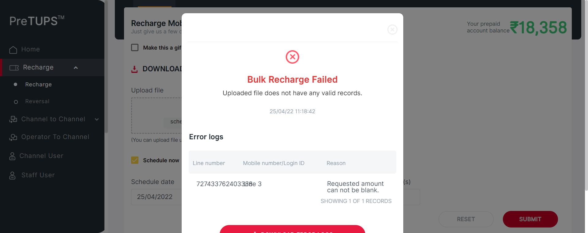
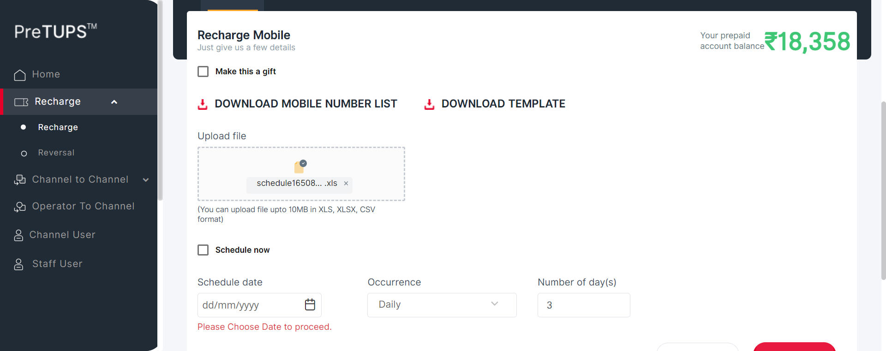

| Status | Timestamp | Details |
|---|---|---|
| info_outline | 11:13:02 AM | Category Code for Super Distributor: DIST |
| info_outline | 11:13:02 AM | Entered webInterface(Super Distributor) |
| info_outline | 11:13:02 AM | webInterface() :: select query: Select WEB_INTERFACE_ALLOWED from categories where category_name= ? |
| info_outline | 11:13:02 AM | Database Returns: WEB_INTERFACE_ALLOWED (Y) |
| info_outline | 11:13:02 AM | Exited webInterface() |
| info_outline | 11:13:02 AM | Entered performC2STransferDaily(Root, Super Distributor, 1357, RC) |
| info_outline | 11:13:02 AM | LoginID found as: AUT_48675 |
| info_outline | 11:13:02 AM | Password found as: com@2468 |
| info_outline | 11:13:02 AM | Username found as: AUTFN1393 AUTLN2379 |
| info_outline | 11:13:03 AM | Trying to select Language |
| info_outline | 11:13:03 AM | Language selected successfully as: English |
| info_outline | 11:13:03 AM | Trying to enter Login ID |
| info_outline | 11:13:03 AM | Login ID entered successfully as: AUT_48675 |
| info_outline | 11:13:03 AM | Trying to enter Password |
| info_outline | 11:13:04 AM | Password entered successfully as: com@2468 |
| info_outline | 11:13:04 AM | Trying to click Login Button |
| info_outline | 11:13:04 AM | Login button clicked successfully |
| info_outline | 11:13:04 AM | Error Message Found on Login Screen: |
| info_outline | 11:13:06 AM | Trying to click on Recharge Heading Link... |
| info_outline | 11:13:06 AM | User clicked Recharged Heading Link. |
| info_outline | 11:13:06 AM | Trying to click on Recharge Link... |
| info_outline | 11:13:06 AM | User clicked Recharge Link |
| info_outline | 11:13:06 AM | Trying clicking on C2S Bulk Operation Heading |
| info_outline | 11:13:07 AM | User clicked C2S Bulk Operation Heading. |
| info_outline | 11:13:12 AM | User Trying to click Bulk Prepaid Recharge |
| info_outline | 11:13:12 AM | User clicked Bulk Prepaid Recharge Link. |
| info_outline | 11:13:12 AM | Trying to click User Template icon... |
| info_outline | 11:13:14 AM | User clicked Template Download Button. |
| info_outline | 11:13:14 AM | Getting File Path.. |
| info_outline | 11:13:17 AM | Latest File Path : .\src\test\resources\UploadDocuments\C2S_Bulk_Transfer\schedule1650865127752.xls |
| info_outline | 11:13:17 AM | GenerateMSISDN class Returns: Remaining MSISDNLength (13) |
| info_outline | 11:13:17 AM | The generated MSISDN is :: 724761088770036 |
| info_outline | 11:13:17 AM | Current Balance of user: 18958.0 |
| info_outline | 11:13:17 AM | Current Balance of user: 18958.0 |
| info_outline | 11:13:17 AM | Current Balance of user: 18958.0 |
| info_outline | 11:13:17 AM | Current Balance of user: 18958.0 |
| info_outline | 11:13:17 AM | Current Balance of user: 18958.0 |
| info_outline | 11:13:17 AM | Current Balance of user: 18958.0 |
| info_outline | 11:13:17 AM | Current Balance of user: 18958.0 |
| info_outline | 11:13:18 AM | Current Balance of user: 18958.0 |
| info_outline | 11:13:18 AM | Current Balance of user: 18958.0 |
| info_outline | 11:13:18 AM | Current Balance of user: 18958.0 |
| info_outline | 11:13:18 AM | Writing to excel .... |
| info_outline | 11:13:18 AM | Written to Excel : MSISDN: 724761088770036, Sub Service: 1, Amount: 200, Language Code: 0 |
| info_outline | 11:13:18 AM | Getting File Path.. |
| info_outline | 11:13:21 AM | Uploading File... |
| info_outline | 11:13:27 AM | Trying to click on Schedule Now checkbox... |
| info_outline | 11:13:27 AM | User clicked Schedule Now checkbox |
| info_outline | 11:13:27 AM | Trying to select the occurrence... |
| info_outline | 11:13:28 AM | User selected Occurrence : Daily |
| info_outline | 11:13:28 AM | Trying to enter the Number of iterations... |
| info_outline | 11:13:28 AM | Number of iterations entered : 3 |
| info_outline | 11:13:28 AM | Trying to click on Recharge Button |
| info_outline | 11:13:28 AM | User clicked Recharge Button |
| info_outline | 11:13:28 AM | User will enter Channel User Pin |
| info_outline | 11:13:28 AM | User entered Channel User Pin: 1357 |
| info_outline | 11:13:28 AM | User clicked Recharge button |
| info_outline | 11:13:32 AM | Trying to get transfer Status. |
| info_outline | 11:13:33 AM | Transfer status fetched as : Bulk Recharge Successful |
| info_outline | 11:13:33 AM | Trying to get transfer ID. |
| info_outline | 11:13:33 AM | Transfer ID fetched as : SBNG220425.0002 |
| info_outline | 11:13:33 AM | Entered fetchScheduleStatus(SBNG220425.0002) |
| info_outline | 11:13:33 AM | fetchScheduleStatus() :: select query: Select status from scheduled_batch_detail where batch_id = ? |
| info_outline | 11:13:33 AM | Error while fetching batch_id |
| low_priority | 11:13:33 AM | org.postgresql.util.PSQLException: ResultSet not positioned properly, perhaps you need to call next. at org.postgresql.jdbc.PgResultSet.checkResultSet(PgResultSet.java:2772) at org.postgresql.jdbc.PgResultSet.getString(PgResultSet.java:1894) at com.mchange.v2.c3p0.impl.NewProxyResultSet.getString(NewProxyResultSet.java:4865) at com.dbrepository.PostGreSQLRepository.fetchScheduleStatus(PostGreSQLRepository.java:13586) at angular.feature.C2SBulkTransferRevamp.performC2SBulkTransferDaily(C2SBulkTransferRevamp.java:109) at angular.testscripts.prereuisitesangular.PreRequisite_C2STransferBulk_Revamp.TC_01_Test_C2SBulkTransferDaily(PreRequisite_C2STransferBulk_Revamp.java:43) at sun.reflect.NativeMethodAccessorImpl.invoke0(Native Method) at sun.reflect.NativeMethodAccessorImpl.invoke(Unknown Source) at sun.reflect.DelegatingMethodAccessorImpl.invoke(Unknown Source) at java.lang.reflect.Method.invoke(Unknown Source) at org.testng.internal.MethodInvocationHelper.invokeMethod(MethodInvocationHelper.java:124) at org.testng.internal.Invoker.invokeMethod(Invoker.java:580) at org.testng.internal.Invoker.invokeTestMethod(Invoker.java:716) at org.testng.internal.Invoker.invokeTestMethods(Invoker.java:988) at org.testng.internal.TestMethodWorker.invokeTestMethods(TestMethodWorker.java:125) at org.testng.internal.TestMethodWorker.run(TestMethodWorker.java:109) at org.testng.TestRunner.privateRun(TestRunner.java:648) at org.testng.TestRunner.run(TestRunner.java:505) at org.testng.SuiteRunner.runTest(SuiteRunner.java:455) at org.testng.SuiteRunner.runSequentially(SuiteRunner.java:450) at org.testng.SuiteRunner.privateRun(SuiteRunner.java:415) at org.testng.SuiteRunner.run(SuiteRunner.java:364) at org.testng.SuiteRunnerWorker.runSuite(SuiteRunnerWorker.java:52) at org.testng.SuiteRunnerWorker.run(SuiteRunnerWorker.java:84) at org.testng.TestNG.runSuitesSequentially(TestNG.java:1208) at org.testng.TestNG.runSuitesLocally(TestNG.java:1137) at org.testng.TestNG.runSuites(TestNG.java:1049) at org.testng.TestNG.run(TestNG.java:1017) at org.testng.remote.AbstractRemoteTestNG.run(AbstractRemoteTestNG.java:115) at org.testng.remote.RemoteTestNG.initAndRun(RemoteTestNG.java:251) at org.testng.remote.RemoteTestNG.main(RemoteTestNG.java:77) |
| info_outline | 11:13:33 AM | Database Returns: Status(null) |
| info_outline | 11:13:33 AM | Exited fetchScheduleStatus() |
| info_outline | 11:13:33 AM | Schedule Status:null |
| info_outline | 11:13:33 AM | Scheduled Batch ID found in DataBase and Schedule is on with status: null |
| info_outline | 11:13:33 AM | C2C Bulk Transfer Transaction message Found as: Bulk Recharge Successfulwith BatchID: SBNG220425.0002 |
| info_outline | 11:13:33 AM | Trying to get transfer ID. |
| info_outline | 11:13:33 AM | Transfer ID fetched as : SBNG220425.0002 |
| error | 11:13:54 AM | Error while getting SSH Server Instance : com.jcraft.jsch.JSchException: java.net.ConnectException: Connection timed out: connect |
| check_circle | 11:13:54 AM | Catalina Log |
| info_outline | 11:13:54 AM | |
| info_outline | 11:13:54 AM | User clicked Done Recharge button |
| info_outline | 11:13:54 AM | Exited performC2STransferDaily() |
| Status | Timestamp | Details |
|---|---|---|
| info_outline | 11:13:57 AM | Category Code for Super Distributor: DIST |
| info_outline | 11:13:57 AM | Entered webInterface(Super Distributor) |
| info_outline | 11:13:57 AM | webInterface() :: select query: Select WEB_INTERFACE_ALLOWED from categories where category_name= ? |
| info_outline | 11:13:57 AM | Database Returns: WEB_INTERFACE_ALLOWED (Y) |
| info_outline | 11:13:57 AM | Exited webInterface() |
| info_outline | 11:13:57 AM | Entered performC2STransferWeekly(Root, Super Distributor, 1357, RC) |
| info_outline | 11:13:57 AM | LoginID found as: AUT_48675 |
| info_outline | 11:13:57 AM | Password found as: com@2468 |
| info_outline | 11:13:57 AM | Username found as: AUTFN1393 AUTLN2379 |
| info_outline | 11:13:57 AM | Trying to select Language |
| info_outline | 11:13:58 AM | Language selected successfully as: English |
| info_outline | 11:13:58 AM | Trying to enter Login ID |
| info_outline | 11:13:58 AM | Login ID entered successfully as: AUT_48675 |
| info_outline | 11:13:58 AM | Trying to enter Password |
| info_outline | 11:13:58 AM | Password entered successfully as: com@2468 |
| info_outline | 11:13:58 AM | Trying to click Login Button |
| info_outline | 11:13:58 AM | Login button clicked successfully |
| info_outline | 11:13:58 AM | Error Message Found on Login Screen: |
| info_outline | 11:14:00 AM | Trying to click on Recharge Heading Link... |
| info_outline | 11:14:00 AM | User clicked Recharged Heading Link. |
| info_outline | 11:14:00 AM | Trying to click on Recharge Link... |
| info_outline | 11:14:00 AM | User clicked Recharge Link |
| info_outline | 11:14:00 AM | Trying clicking on C2S Bulk Operation Heading |
| info_outline | 11:14:00 AM | User clicked C2S Bulk Operation Heading. |
| info_outline | 11:14:05 AM | User Trying to click Bulk Prepaid Recharge |
| info_outline | 11:14:06 AM | User clicked Bulk Prepaid Recharge Link. |
| info_outline | 11:14:06 AM | Trying to click Mobile Number List icon... |
| info_outline | 11:14:08 AM | User clicked Mobile Number List Download Button. |
| info_outline | 11:14:08 AM | Trying to click User Template icon... |
| info_outline | 11:14:10 AM | User clicked Template Download Button. |
| info_outline | 11:14:10 AM | Getting File Path.. |
| info_outline | 11:14:13 AM | Latest File Path : .\src\test\resources\UploadDocuments\C2S_Bulk_Transfer\schedule1650865183362.xls |
| info_outline | 11:14:13 AM | GenerateMSISDN class Returns: Remaining MSISDNLength (13) |
| info_outline | 11:14:13 AM | The generated MSISDN is :: 728947309343615 |
| info_outline | 11:14:13 AM | Current Balance of user: 18758.0 |
| info_outline | 11:14:13 AM | Current Balance of user: 18758.0 |
| info_outline | 11:14:13 AM | Current Balance of user: 18758.0 |
| info_outline | 11:14:13 AM | Current Balance of user: 18758.0 |
| info_outline | 11:14:13 AM | Current Balance of user: 18758.0 |
| info_outline | 11:14:13 AM | Current Balance of user: 18758.0 |
| info_outline | 11:14:13 AM | Current Balance of user: 18758.0 |
| info_outline | 11:14:13 AM | Current Balance of user: 18758.0 |
| info_outline | 11:14:13 AM | Current Balance of user: 18758.0 |
| info_outline | 11:14:13 AM | Current Balance of user: 18758.0 |
| info_outline | 11:14:13 AM | Writing to excel .... |
| info_outline | 11:14:13 AM | Written to Excel : MSISDN: 728947309343615, Sub Service: 1, Amount: 200, Language Code: 0 |
| info_outline | 11:14:13 AM | Getting File Path.. |
| info_outline | 11:14:16 AM | Uploading File... |
| info_outline | 11:14:22 AM | Trying to click on Schedule Now checkbox... |
| info_outline | 11:14:22 AM | User clicked Schedule Now checkbox |
| info_outline | 11:14:22 AM | Trying to select the occurrence... |
| info_outline | 11:14:23 AM | User selected Occurrence : Weekly |
| info_outline | 11:14:23 AM | Trying to enter the Number of iterations... |
| info_outline | 11:14:23 AM | Number of iterations entered : 3 |
| info_outline | 11:14:23 AM | Trying to click on Recharge Button |
| info_outline | 11:14:23 AM | User clicked Recharge Button |
| info_outline | 11:14:23 AM | User will enter Channel User Pin |
| info_outline | 11:14:23 AM | User entered Channel User Pin: 1357 |
| info_outline | 11:14:23 AM | User clicked Recharge button |
| info_outline | 11:14:28 AM | Trying to get transfer Status. |
| info_outline | 11:14:28 AM | Transfer status fetched as : Bulk Recharge Successful |
| info_outline | 11:14:28 AM | Trying to get transfer ID. |
| info_outline | 11:14:28 AM | Transfer ID fetched as : SBNG220425.0003 |
| info_outline | 11:14:28 AM | Entered fetchScheduleStatus(SBNG220425.0003) |
| info_outline | 11:14:28 AM | fetchScheduleStatus() :: select query: Select status from scheduled_batch_detail where batch_id = ? |
| info_outline | 11:14:28 AM | Error while fetching batch_id |
| low_priority | 11:14:28 AM | org.postgresql.util.PSQLException: ResultSet not positioned properly, perhaps you need to call next. at org.postgresql.jdbc.PgResultSet.checkResultSet(PgResultSet.java:2772) at org.postgresql.jdbc.PgResultSet.getString(PgResultSet.java:1894) at com.mchange.v2.c3p0.impl.NewProxyResultSet.getString(NewProxyResultSet.java:4865) at com.dbrepository.PostGreSQLRepository.fetchScheduleStatus(PostGreSQLRepository.java:13586) at angular.feature.C2SBulkTransferRevamp.performC2SBulkTransferWeekly(C2SBulkTransferRevamp.java:216) at angular.testscripts.prereuisitesangular.PreRequisite_C2STransferBulk_Revamp.TC_02_Test_C2SBulkTransferWeekly(PreRequisite_C2STransferBulk_Revamp.java:68) at sun.reflect.NativeMethodAccessorImpl.invoke0(Native Method) at sun.reflect.NativeMethodAccessorImpl.invoke(Unknown Source) at sun.reflect.DelegatingMethodAccessorImpl.invoke(Unknown Source) at java.lang.reflect.Method.invoke(Unknown Source) at org.testng.internal.MethodInvocationHelper.invokeMethod(MethodInvocationHelper.java:124) at org.testng.internal.Invoker.invokeMethod(Invoker.java:580) at org.testng.internal.Invoker.invokeTestMethod(Invoker.java:716) at org.testng.internal.Invoker.invokeTestMethods(Invoker.java:988) at org.testng.internal.TestMethodWorker.invokeTestMethods(TestMethodWorker.java:125) at org.testng.internal.TestMethodWorker.run(TestMethodWorker.java:109) at org.testng.TestRunner.privateRun(TestRunner.java:648) at org.testng.TestRunner.run(TestRunner.java:505) at org.testng.SuiteRunner.runTest(SuiteRunner.java:455) at org.testng.SuiteRunner.runSequentially(SuiteRunner.java:450) at org.testng.SuiteRunner.privateRun(SuiteRunner.java:415) at org.testng.SuiteRunner.run(SuiteRunner.java:364) at org.testng.SuiteRunnerWorker.runSuite(SuiteRunnerWorker.java:52) at org.testng.SuiteRunnerWorker.run(SuiteRunnerWorker.java:84) at org.testng.TestNG.runSuitesSequentially(TestNG.java:1208) at org.testng.TestNG.runSuitesLocally(TestNG.java:1137) at org.testng.TestNG.runSuites(TestNG.java:1049) at org.testng.TestNG.run(TestNG.java:1017) at org.testng.remote.AbstractRemoteTestNG.run(AbstractRemoteTestNG.java:115) at org.testng.remote.RemoteTestNG.initAndRun(RemoteTestNG.java:251) at org.testng.remote.RemoteTestNG.main(RemoteTestNG.java:77) |
| info_outline | 11:14:28 AM | Database Returns: Status(null) |
| info_outline | 11:14:28 AM | Exited fetchScheduleStatus() |
| info_outline | 11:14:28 AM | Schedule Status:null |
| info_outline | 11:14:28 AM | Scheduled Batch ID found in DataBase and Schedule is on with status: null |
| info_outline | 11:14:28 AM | C2C Bulk Transfer Transaction message Found as: Bulk Recharge Successfulwith BatchID: SBNG220425.0003 |
| info_outline | 11:14:28 AM | Trying to get transfer ID. |
| info_outline | 11:14:28 AM | Transfer ID fetched as : SBNG220425.0003 |
| error | 11:14:49 AM | Error while getting SSH Server Instance : com.jcraft.jsch.JSchException: java.net.ConnectException: Connection timed out: connect |
| check_circle | 11:14:49 AM | Catalina Log |
| info_outline | 11:14:49 AM | |
| info_outline | 11:14:49 AM | User clicked Done Recharge button |
| info_outline | 11:14:49 AM | Exited performC2STransferWeekly() |
| Status | Timestamp | Details |
|---|---|---|
| info_outline | 11:14:51 AM | Category Code for Super Distributor: DIST |
| info_outline | 11:14:51 AM | Entered webInterface(Super Distributor) |
| info_outline | 11:14:51 AM | webInterface() :: select query: Select WEB_INTERFACE_ALLOWED from categories where category_name= ? |
| info_outline | 11:14:51 AM | Database Returns: WEB_INTERFACE_ALLOWED (Y) |
| info_outline | 11:14:51 AM | Exited webInterface() |
| info_outline | 11:14:51 AM | Entered performC2STransferMonthly(Root, Super Distributor, 1357, RC) |
| info_outline | 11:14:51 AM | LoginID found as: AUT_48675 |
| info_outline | 11:14:51 AM | Password found as: com@2468 |
| info_outline | 11:14:51 AM | Username found as: AUTFN1393 AUTLN2379 |
| info_outline | 11:14:52 AM | Trying to select Language |
| info_outline | 11:14:52 AM | Language selected successfully as: English |
| info_outline | 11:14:52 AM | Trying to enter Login ID |
| info_outline | 11:14:52 AM | Login ID entered successfully as: AUT_48675 |
| info_outline | 11:14:52 AM | Trying to enter Password |
| info_outline | 11:14:53 AM | Password entered successfully as: com@2468 |
| info_outline | 11:14:53 AM | Trying to click Login Button |
| info_outline | 11:14:53 AM | Login button clicked successfully |
| info_outline | 11:14:53 AM | Error Message Found on Login Screen: |
| info_outline | 11:14:54 AM | Trying to click on Recharge Heading Link... |
| info_outline | 11:14:54 AM | User clicked Recharged Heading Link. |
| info_outline | 11:14:54 AM | Trying to click on Recharge Link... |
| info_outline | 11:14:54 AM | User clicked Recharge Link |
| info_outline | 11:14:54 AM | Trying clicking on C2S Bulk Operation Heading |
| info_outline | 11:14:55 AM | User clicked C2S Bulk Operation Heading. |
| info_outline | 11:15:00 AM | User Trying to click Bulk Prepaid Recharge |
| info_outline | 11:15:00 AM | User clicked Bulk Prepaid Recharge Link. |
| info_outline | 11:15:00 AM | Trying to click Mobile Number List icon... |
| info_outline | 11:15:02 AM | User clicked Mobile Number List Download Button. |
| info_outline | 11:15:02 AM | Trying to click User Template icon... |
| info_outline | 11:15:04 AM | User clicked Template Download Button. |
| info_outline | 11:15:05 AM | Getting File Path.. |
| info_outline | 11:15:08 AM | Latest File Path : .\src\test\resources\UploadDocuments\C2S_Bulk_Transfer\schedule1650865238035.xls |
| info_outline | 11:15:08 AM | GenerateMSISDN class Returns: Remaining MSISDNLength (13) |
| info_outline | 11:15:08 AM | The generated MSISDN is :: 721011119003713 |
| info_outline | 11:15:08 AM | Current Balance of user: 18558.0 |
| info_outline | 11:15:08 AM | Current Balance of user: 18558.0 |
| info_outline | 11:15:08 AM | Current Balance of user: 18558.0 |
| info_outline | 11:15:08 AM | Current Balance of user: 18558.0 |
| info_outline | 11:15:08 AM | Current Balance of user: 18558.0 |
| info_outline | 11:15:08 AM | Current Balance of user: 18558.0 |
| info_outline | 11:15:08 AM | Current Balance of user: 18558.0 |
| info_outline | 11:15:08 AM | Current Balance of user: 18558.0 |
| info_outline | 11:15:08 AM | Current Balance of user: 18558.0 |
| info_outline | 11:15:08 AM | Current Balance of user: 18558.0 |
| info_outline | 11:15:08 AM | Writing to excel .... |
| info_outline | 11:15:08 AM | Written to Excel : MSISDN: 721011119003713, Sub Service: 1, Amount: 200, Language Code: 0 |
| info_outline | 11:15:08 AM | Getting File Path.. |
| info_outline | 11:15:11 AM | Uploading File... |
| info_outline | 11:15:17 AM | Trying to click on Schedule Now checkbox... |
| info_outline | 11:15:17 AM | User clicked Schedule Now checkbox |
| info_outline | 11:15:17 AM | Trying to select the occurrence... |
| info_outline | 11:15:17 AM | User selected Occurrence : Monthly |
| info_outline | 11:15:17 AM | Trying to enter the Number of iterations... |
| info_outline | 11:15:17 AM | Number of iterations entered : 3 |
| info_outline | 11:15:17 AM | Trying to click on Recharge Button |
| info_outline | 11:15:17 AM | User clicked Recharge Button |
| info_outline | 11:15:17 AM | User will enter Channel User Pin |
| info_outline | 11:15:17 AM | User entered Channel User Pin: 1357 |
| info_outline | 11:15:17 AM | User clicked Recharge button |
| info_outline | 11:15:22 AM | Trying to get transfer Status. |
| info_outline | 11:15:22 AM | Transfer status fetched as : Bulk Recharge Successful |
| info_outline | 11:15:22 AM | Trying to get transfer ID. |
| info_outline | 11:15:22 AM | Transfer ID fetched as : SBNG220425.0004 |
| info_outline | 11:15:22 AM | Entered fetchScheduleStatus(SBNG220425.0004) |
| info_outline | 11:15:22 AM | fetchScheduleStatus() :: select query: Select status from scheduled_batch_detail where batch_id = ? |
| info_outline | 11:15:22 AM | Error while fetching batch_id |
| low_priority | 11:15:22 AM | org.postgresql.util.PSQLException: ResultSet not positioned properly, perhaps you need to call next. at org.postgresql.jdbc.PgResultSet.checkResultSet(PgResultSet.java:2772) at org.postgresql.jdbc.PgResultSet.getString(PgResultSet.java:1894) at com.mchange.v2.c3p0.impl.NewProxyResultSet.getString(NewProxyResultSet.java:4865) at com.dbrepository.PostGreSQLRepository.fetchScheduleStatus(PostGreSQLRepository.java:13586) at angular.feature.C2SBulkTransferRevamp.performC2SBulkTransferMonthly(C2SBulkTransferRevamp.java:325) at angular.testscripts.prereuisitesangular.PreRequisite_C2STransferBulk_Revamp.TC_03_Test_C2SBulkTransferMonthly(PreRequisite_C2STransferBulk_Revamp.java:93) at sun.reflect.NativeMethodAccessorImpl.invoke0(Native Method) at sun.reflect.NativeMethodAccessorImpl.invoke(Unknown Source) at sun.reflect.DelegatingMethodAccessorImpl.invoke(Unknown Source) at java.lang.reflect.Method.invoke(Unknown Source) at org.testng.internal.MethodInvocationHelper.invokeMethod(MethodInvocationHelper.java:124) at org.testng.internal.Invoker.invokeMethod(Invoker.java:580) at org.testng.internal.Invoker.invokeTestMethod(Invoker.java:716) at org.testng.internal.Invoker.invokeTestMethods(Invoker.java:988) at org.testng.internal.TestMethodWorker.invokeTestMethods(TestMethodWorker.java:125) at org.testng.internal.TestMethodWorker.run(TestMethodWorker.java:109) at org.testng.TestRunner.privateRun(TestRunner.java:648) at org.testng.TestRunner.run(TestRunner.java:505) at org.testng.SuiteRunner.runTest(SuiteRunner.java:455) at org.testng.SuiteRunner.runSequentially(SuiteRunner.java:450) at org.testng.SuiteRunner.privateRun(SuiteRunner.java:415) at org.testng.SuiteRunner.run(SuiteRunner.java:364) at org.testng.SuiteRunnerWorker.runSuite(SuiteRunnerWorker.java:52) at org.testng.SuiteRunnerWorker.run(SuiteRunnerWorker.java:84) at org.testng.TestNG.runSuitesSequentially(TestNG.java:1208) at org.testng.TestNG.runSuitesLocally(TestNG.java:1137) at org.testng.TestNG.runSuites(TestNG.java:1049) at org.testng.TestNG.run(TestNG.java:1017) at org.testng.remote.AbstractRemoteTestNG.run(AbstractRemoteTestNG.java:115) at org.testng.remote.RemoteTestNG.initAndRun(RemoteTestNG.java:251) at org.testng.remote.RemoteTestNG.main(RemoteTestNG.java:77) |
| info_outline | 11:15:22 AM | Database Returns: Status(null) |
| info_outline | 11:15:22 AM | Exited fetchScheduleStatus() |
| info_outline | 11:15:22 AM | Schedule Status:null |
| info_outline | 11:15:22 AM | Scheduled Batch ID found in DataBase and Schedule is on with status: null |
| info_outline | 11:15:22 AM | C2C Bulk Transfer Transaction message Found as: Bulk Recharge Successfulwith BatchID: SBNG220425.0004 |
| info_outline | 11:15:22 AM | Trying to get transfer ID. |
| info_outline | 11:15:22 AM | Transfer ID fetched as : SBNG220425.0004 |
| error | 11:15:43 AM | Error while getting SSH Server Instance : com.jcraft.jsch.JSchException: java.net.ConnectException: Connection timed out: connect |
| check_circle | 11:15:43 AM | Catalina Log |
| info_outline | 11:15:43 AM | |
| info_outline | 11:15:43 AM | User clicked Done Recharge button |
| info_outline | 11:15:43 AM | Exited performC2STransferMonthly() |
| Status | Timestamp | Details |
|---|---|---|
| info_outline | 11:15:45 AM | Category Code for Super Distributor: DIST |
| info_outline | 11:15:45 AM | Entered webInterface(Super Distributor) |
| info_outline | 11:15:45 AM | webInterface() :: select query: Select WEB_INTERFACE_ALLOWED from categories where category_name= ? |
| info_outline | 11:15:45 AM | Database Returns: WEB_INTERFACE_ALLOWED (Y) |
| info_outline | 11:15:45 AM | Exited webInterface() |
| info_outline | 11:15:45 AM | Entered performC2SBulkTransferInvalidMSISDN(Root, Super Distributor, 1357, RC) |
| info_outline | 11:15:45 AM | LoginID found as: AUT_48675 |
| info_outline | 11:15:45 AM | Password found as: com@2468 |
| info_outline | 11:15:45 AM | Username found as: AUTFN1393 AUTLN2379 |
| info_outline | 11:15:46 AM | Trying to select Language |
| info_outline | 11:15:46 AM | Language selected successfully as: English |
| info_outline | 11:15:46 AM | Trying to enter Login ID |
| info_outline | 11:15:46 AM | Login ID entered successfully as: AUT_48675 |
| info_outline | 11:15:46 AM | Trying to enter Password |
| info_outline | 11:15:47 AM | Password entered successfully as: com@2468 |
| info_outline | 11:15:47 AM | Trying to click Login Button |
| info_outline | 11:15:47 AM | Login button clicked successfully |
| info_outline | 11:15:47 AM | Error Message Found on Login Screen: |
| info_outline | 11:15:48 AM | Trying to click on Recharge Heading Link... |
| info_outline | 11:15:48 AM | User clicked Recharged Heading Link. |
| info_outline | 11:15:48 AM | Trying to click on Recharge Link... |
| info_outline | 11:15:48 AM | User clicked Recharge Link |
| info_outline | 11:15:48 AM | Trying clicking on C2S Bulk Operation Heading |
| info_outline | 11:15:49 AM | User clicked C2S Bulk Operation Heading. |
| info_outline | 11:15:54 AM | User Trying to click Bulk Prepaid Recharge |
| info_outline | 11:15:54 AM | User clicked Bulk Prepaid Recharge Link. |
| info_outline | 11:15:54 AM | Trying to click Mobile Number List icon... |
| info_outline | 11:15:56 AM | User clicked Mobile Number List Download Button. |
| info_outline | 11:15:56 AM | Trying to click User Template icon... |
| info_outline | 11:15:58 AM | User clicked Template Download Button. |
| info_outline | 11:15:58 AM | Getting File Path.. |
| info_outline | 11:16:01 AM | Latest File Path : .\src\test\resources\UploadDocuments\C2S_Bulk_Transfer\schedule1650865291922.xls |
| info_outline | 11:16:01 AM | Current Balance of user: 18358.0 |
| info_outline | 11:16:01 AM | Current Balance of user: 18358.0 |
| info_outline | 11:16:01 AM | Current Balance of user: 18358.0 |
| info_outline | 11:16:01 AM | Current Balance of user: 18358.0 |
| info_outline | 11:16:01 AM | Current Balance of user: 18358.0 |
| info_outline | 11:16:01 AM | Current Balance of user: 18358.0 |
| info_outline | 11:16:01 AM | Current Balance of user: 18358.0 |
| info_outline | 11:16:02 AM | Current Balance of user: 18358.0 |
| info_outline | 11:16:02 AM | Current Balance of user: 18358.0 |
| info_outline | 11:16:02 AM | Current Balance of user: 18358.0 |
| info_outline | 11:16:02 AM | Writing to excel .... |
| info_outline | 11:16:02 AM | Written to Excel : MSISDN: 76924, Sub Service: 1, Amount: 200, Language Code: 0 |
| info_outline | 11:16:02 AM | Getting File Path.. |
| info_outline | 11:16:05 AM | Uploading File... |
| info_outline | 11:16:11 AM | Trying to click on Schedule Now checkbox... |
| info_outline | 11:16:11 AM | User clicked Schedule Now checkbox |
| info_outline | 11:16:11 AM | Trying to select the occurrence... |
| info_outline | 11:16:11 AM | User selected Occurrence : Daily |
| info_outline | 11:16:11 AM | Trying to enter the Number of iterations... |
| info_outline | 11:16:11 AM | Number of iterations entered : 3 |
| info_outline | 11:16:11 AM | Trying to click on Recharge Button |
| info_outline | 11:16:11 AM | User clicked Recharge Button |
| info_outline | 11:16:11 AM | User will enter Channel User Pin |
| info_outline | 11:16:11 AM | User entered Channel User Pin: 1357 |
| info_outline | 11:16:11 AM | User clicked Recharge button |
| info_outline | 11:16:12 AM | Trying to fetch batch ID.. |
| info_outline | 11:16:13 AM | Failed Reason on UI: Invalid subscriber's msisdn. |
| info_outline | 11:16:13 AM | Expected: Invalid subscriber's msisdn. |
| info_outline | 11:16:13 AM | Message Validation Success |
| info_outline | 11:16:13 AM | |
| error | 11:16:34 AM | Error while getting SSH Server Instance : com.jcraft.jsch.JSchException: java.net.ConnectException: Connection timed out: connect |
| check_circle | 11:16:34 AM | Catalina Log |
| info_outline | 11:16:34 AM | Exited performC2SBulkTransferInvalidMSISDN() |
| Status | Timestamp | Details |
|---|---|---|
| info_outline | 11:16:35 AM | Category Code for Super Distributor: DIST |
| info_outline | 11:16:35 AM | Entered webInterface(Super Distributor) |
| info_outline | 11:16:35 AM | webInterface() :: select query: Select WEB_INTERFACE_ALLOWED from categories where category_name= ? |
| info_outline | 11:16:35 AM | Database Returns: WEB_INTERFACE_ALLOWED (Y) |
| info_outline | 11:16:35 AM | Exited webInterface() |
| info_outline | 11:16:35 AM | Entered performC2SBulkTransferNegativeAmount(Root, Super Distributor, 1357, RC) |
| info_outline | 11:16:35 AM | LoginID found as: AUT_48675 |
| info_outline | 11:16:35 AM | Password found as: com@2468 |
| info_outline | 11:16:35 AM | Username found as: AUTFN1393 AUTLN2379 |
| info_outline | 11:16:35 AM | Trying to select Language |
| info_outline | 11:16:35 AM | Language selected successfully as: English |
| info_outline | 11:16:35 AM | Trying to enter Login ID |
| info_outline | 11:16:36 AM | Login ID entered successfully as: AUT_48675 |
| info_outline | 11:16:36 AM | Trying to enter Password |
| info_outline | 11:16:36 AM | Password entered successfully as: com@2468 |
| info_outline | 11:16:36 AM | Trying to click Login Button |
| info_outline | 11:16:36 AM | Login button clicked successfully |
| info_outline | 11:16:36 AM | Error Message Found on Login Screen: |
| info_outline | 11:16:37 AM | Trying to click on Recharge Heading Link... |
| info_outline | 11:16:37 AM | User clicked Recharged Heading Link. |
| info_outline | 11:16:37 AM | Trying to click on Recharge Link... |
| info_outline | 11:16:38 AM | User clicked Recharge Link |
| info_outline | 11:16:38 AM | Trying clicking on C2S Bulk Operation Heading |
| info_outline | 11:16:38 AM | User clicked C2S Bulk Operation Heading. |
| info_outline | 11:16:43 AM | User Trying to click Bulk Prepaid Recharge |
| info_outline | 11:16:43 AM | User clicked Bulk Prepaid Recharge Link. |
| info_outline | 11:16:43 AM | Trying to click Mobile Number List icon... |
| info_outline | 11:16:45 AM | User clicked Mobile Number List Download Button. |
| info_outline | 11:16:45 AM | Trying to click User Template icon... |
| info_outline | 11:16:48 AM | User clicked Template Download Button. |
| info_outline | 11:16:48 AM | Getting File Path.. |
| info_outline | 11:16:51 AM | Latest File Path : .\src\test\resources\UploadDocuments\C2S_Bulk_Transfer\schedule1650865341220.xls |
| info_outline | 11:16:51 AM | GenerateMSISDN class Returns: Remaining MSISDNLength (13) |
| info_outline | 11:16:51 AM | The generated MSISDN is :: 723670350639097 |
| info_outline | 11:16:51 AM | Current Balance of user: 18358.0 |
| info_outline | 11:16:51 AM | Current Balance of user: 18358.0 |
| info_outline | 11:16:51 AM | Current Balance of user: 18358.0 |
| info_outline | 11:16:51 AM | Current Balance of user: 18358.0 |
| info_outline | 11:16:51 AM | Current Balance of user: 18358.0 |
| info_outline | 11:16:51 AM | Current Balance of user: 18358.0 |
| info_outline | 11:16:51 AM | Current Balance of user: 18358.0 |
| info_outline | 11:16:51 AM | Current Balance of user: 18358.0 |
| info_outline | 11:16:51 AM | Current Balance of user: 18358.0 |
| info_outline | 11:16:51 AM | Current Balance of user: 18358.0 |
| info_outline | 11:16:51 AM | Writing to excel .... |
| info_outline | 11:16:51 AM | Written to Excel : MSISDN: 723670350639097, Sub Service: 1, Amount: -200, Language Code: 0 |
| info_outline | 11:16:51 AM | Getting File Path.. |
| info_outline | 11:16:54 AM | Uploading File... |
| info_outline | 11:17:00 AM | Trying to click on Schedule Now checkbox... |
| info_outline | 11:17:00 AM | User clicked Schedule Now checkbox |
| info_outline | 11:17:00 AM | Trying to select the occurrence... |
| info_outline | 11:17:00 AM | User selected Occurrence : Daily |
| info_outline | 11:17:00 AM | Trying to enter the Number of iterations... |
| info_outline | 11:17:00 AM | Number of iterations entered : 3 |
| info_outline | 11:17:00 AM | Trying to click on Recharge Button |
| info_outline | 11:17:01 AM | User clicked Recharge Button |
| info_outline | 11:17:01 AM | User will enter Channel User Pin |
| info_outline | 11:17:01 AM | User entered Channel User Pin: 1357 |
| info_outline | 11:17:01 AM | User clicked Recharge button |
| info_outline | 11:17:01 AM | Trying to fetch batch ID.. |
| info_outline | 11:17:01 AM | Failed Reason on UI: Invalid or empty wallet type. |
| info_outline | 11:17:01 AM | Expected: Invalid or empty wallet type. |
| info_outline | 11:17:01 AM | Message Validation Success |
| info_outline | 11:17:02 AM | |
| error | 11:17:23 AM | Error while getting SSH Server Instance : com.jcraft.jsch.JSchException: java.net.ConnectException: Connection timed out: connect |
| check_circle | 11:17:23 AM | Catalina Log |
| info_outline | 11:17:23 AM | Exited performC2SBulkTransferNegativeAmount() |
| Status | Timestamp | Details |
|---|---|---|
| info_outline | 11:17:24 AM | Category Code for Super Distributor: DIST |
| info_outline | 11:17:25 AM | Entered webInterface(Super Distributor) |
| info_outline | 11:17:25 AM | webInterface() :: select query: Select WEB_INTERFACE_ALLOWED from categories where category_name= ? |
| info_outline | 11:17:25 AM | Database Returns: WEB_INTERFACE_ALLOWED (Y) |
| info_outline | 11:17:25 AM | Exited webInterface() |
| info_outline | 11:17:25 AM | Entered performC2SBulkTransferZeroAmount(Root, Super Distributor, 1357, RC) |
| info_outline | 11:17:25 AM | LoginID found as: AUT_48675 |
| info_outline | 11:17:25 AM | Password found as: com@2468 |
| info_outline | 11:17:25 AM | Username found as: AUTFN1393 AUTLN2379 |
| info_outline | 11:17:25 AM | Trying to select Language |
| info_outline | 11:17:25 AM | Language selected successfully as: English |
| info_outline | 11:17:25 AM | Trying to enter Login ID |
| info_outline | 11:17:26 AM | Login ID entered successfully as: AUT_48675 |
| info_outline | 11:17:26 AM | Trying to enter Password |
| info_outline | 11:17:26 AM | Password entered successfully as: com@2468 |
| info_outline | 11:17:26 AM | Trying to click Login Button |
| info_outline | 11:17:26 AM | Login button clicked successfully |
| info_outline | 11:17:26 AM | Error Message Found on Login Screen: |
| info_outline | 11:17:27 AM | Trying to click on Recharge Heading Link... |
| info_outline | 11:17:27 AM | User clicked Recharged Heading Link. |
| info_outline | 11:17:28 AM | Trying to click on Recharge Link... |
| info_outline | 11:17:28 AM | User clicked Recharge Link |
| info_outline | 11:17:28 AM | Trying clicking on C2S Bulk Operation Heading |
| info_outline | 11:17:28 AM | User clicked C2S Bulk Operation Heading. |
| info_outline | 11:17:33 AM | User Trying to click Bulk Prepaid Recharge |
| info_outline | 11:17:33 AM | User clicked Bulk Prepaid Recharge Link. |
| info_outline | 11:17:33 AM | Trying to click Mobile Number List icon... |
| info_outline | 11:17:36 AM | User clicked Mobile Number List Download Button. |
| info_outline | 11:17:36 AM | Trying to click User Template icon... |
| info_outline | 11:17:38 AM | User clicked Template Download Button. |
| info_outline | 11:17:38 AM | Getting File Path.. |
| info_outline | 11:17:41 AM | Latest File Path : .\src\test\resources\UploadDocuments\C2S_Bulk_Transfer\schedule1650865391390.xls |
| info_outline | 11:17:41 AM | GenerateMSISDN class Returns: Remaining MSISDNLength (13) |
| info_outline | 11:17:41 AM | The generated MSISDN is :: 726955629775132 |
| info_outline | 11:17:41 AM | Writing to excel .... |
| info_outline | 11:17:41 AM | Written to Excel : MSISDN: 726955629775132, Sub Service: 1, Amount: 0, Language Code: 0 |
| info_outline | 11:17:41 AM | Getting File Path.. |
| info_outline | 11:17:44 AM | Uploading File... |
| info_outline | 11:17:50 AM | Trying to click on Schedule Now checkbox... |
| info_outline | 11:17:50 AM | User clicked Schedule Now checkbox |
| info_outline | 11:17:50 AM | Trying to select the occurrence... |
| info_outline | 11:17:50 AM | User selected Occurrence : Daily |
| info_outline | 11:17:50 AM | Trying to enter the Number of iterations... |
| info_outline | 11:17:51 AM | Number of iterations entered : 3 |
| info_outline | 11:17:51 AM | Trying to click on Recharge Button |
| info_outline | 11:17:51 AM | User clicked Recharge Button |
| info_outline | 11:17:51 AM | User will enter Channel User Pin |
| info_outline | 11:17:51 AM | User entered Channel User Pin: 1357 |
| info_outline | 11:17:51 AM | User clicked Recharge button |
| info_outline | 11:17:52 AM | Trying to fetch batch ID.. |
| info_outline | 11:17:52 AM | Failed Reason on UI: Requested amount can not be zero. |
| info_outline | 11:17:52 AM | Expected: Requested amount can not be zero. |
| info_outline | 11:17:52 AM | Message Validation Success |
| info_outline | 11:17:52 AM | |
| error | 11:18:13 AM | Error while getting SSH Server Instance : com.jcraft.jsch.JSchException: java.net.ConnectException: Connection timed out: connect |
| check_circle | 11:18:13 AM | Catalina Log |
| info_outline | 11:18:13 AM | Exited performC2SBulkTransferZeroAmount() |
| Status | Timestamp | Details |
|---|---|---|
| info_outline | 11:18:15 AM | Category Code for Super Distributor: DIST |
| info_outline | 11:18:15 AM | Entered webInterface(Super Distributor) |
| info_outline | 11:18:15 AM | webInterface() :: select query: Select WEB_INTERFACE_ALLOWED from categories where category_name= ? |
| info_outline | 11:18:15 AM | Database Returns: WEB_INTERFACE_ALLOWED (Y) |
| info_outline | 11:18:15 AM | Exited webInterface() |
| info_outline | 11:18:15 AM | Entered performC2SBulkTransferBlankAmount(Root, Super Distributor, 1357, RC) |
| info_outline | 11:18:15 AM | LoginID found as: AUT_48675 |
| info_outline | 11:18:15 AM | Password found as: com@2468 |
| info_outline | 11:18:15 AM | Username found as: AUTFN1393 AUTLN2379 |
| info_outline | 11:18:15 AM | Trying to select Language |
| info_outline | 11:18:16 AM | Language selected successfully as: English |
| info_outline | 11:18:16 AM | Trying to enter Login ID |
| info_outline | 11:18:16 AM | Login ID entered successfully as: AUT_48675 |
| info_outline | 11:18:16 AM | Trying to enter Password |
| info_outline | 11:18:16 AM | Password entered successfully as: com@2468 |
| info_outline | 11:18:16 AM | Trying to click Login Button |
| info_outline | 11:18:16 AM | Login button clicked successfully |
| info_outline | 11:18:16 AM | Error Message Found on Login Screen: |
| info_outline | 11:18:18 AM | Trying to click on Recharge Heading Link... |
| info_outline | 11:18:18 AM | User clicked Recharged Heading Link. |
| info_outline | 11:18:18 AM | Trying to click on Recharge Link... |
| info_outline | 11:18:18 AM | User clicked Recharge Link |
| info_outline | 11:18:18 AM | Trying clicking on C2S Bulk Operation Heading |
| info_outline | 11:18:18 AM | User clicked C2S Bulk Operation Heading. |
| info_outline | 11:18:23 AM | User Trying to click Bulk Prepaid Recharge |
| info_outline | 11:18:24 AM | User clicked Bulk Prepaid Recharge Link. |
| info_outline | 11:18:24 AM | Trying to click Mobile Number List icon... |
| info_outline | 11:18:26 AM | User clicked Mobile Number List Download Button. |
| info_outline | 11:18:26 AM | Trying to click User Template icon... |
| info_outline | 11:18:28 AM | User clicked Template Download Button. |
| info_outline | 11:18:28 AM | Getting File Path.. |
| info_outline | 11:18:31 AM | Latest File Path : .\src\test\resources\UploadDocuments\C2S_Bulk_Transfer\schedule1650865441574.xls |
| info_outline | 11:18:31 AM | GenerateMSISDN class Returns: Remaining MSISDNLength (13) |
| info_outline | 11:18:31 AM | The generated MSISDN is :: 727433762403388 |
| info_outline | 11:18:31 AM | Writing to excel .... |
| info_outline | 11:18:31 AM | Written to Excel : MSISDN: 727433762403388, Sub Service: 1, Amount: , Language Code: 0 |
| info_outline | 11:18:31 AM | Getting File Path.. |
| info_outline | 11:18:34 AM | Uploading File... |
| info_outline | 11:18:40 AM | Trying to click on Schedule Now checkbox... |
| info_outline | 11:18:40 AM | User clicked Schedule Now checkbox |
| info_outline | 11:18:40 AM | Trying to select the occurrence... |
| info_outline | 11:18:41 AM | User selected Occurrence : Daily |
| info_outline | 11:18:41 AM | Trying to enter the Number of iterations... |
| info_outline | 11:18:41 AM | Number of iterations entered : 3 |
| info_outline | 11:18:41 AM | Trying to click on Recharge Button |
| info_outline | 11:18:41 AM | User clicked Recharge Button |
| info_outline | 11:18:41 AM | User will enter Channel User Pin |
| info_outline | 11:18:41 AM | User entered Channel User Pin: 1357 |
| info_outline | 11:18:41 AM | User clicked Recharge button |
| info_outline | 11:18:42 AM | Trying to fetch batch ID.. |
| info_outline | 11:18:42 AM | Failed Reason on UI: Requested amount can not be blank. |
| info_outline | 11:18:42 AM | Expected: Requested amount can not be blank. |
| info_outline | 11:18:42 AM | Message Validation Success |
| info_outline | 11:18:42 AM |  |
| error | 11:19:03 AM | Error while getting SSH Server Instance : com.jcraft.jsch.JSchException: java.net.ConnectException: Connection timed out: connect |
| check_circle | 11:19:03 AM | Catalina Log |
| info_outline | 11:19:03 AM | Exited performC2SBulkTransferBlankAmount() |
| Status | Timestamp | Details |
|---|---|---|
| info_outline | 11:19:05 AM | Category Code for Super Distributor: DIST |
| info_outline | 11:19:05 AM | Entered webInterface(Super Distributor) |
| info_outline | 11:19:05 AM | webInterface() :: select query: Select WEB_INTERFACE_ALLOWED from categories where category_name= ? |
| info_outline | 11:19:05 AM | Database Returns: WEB_INTERFACE_ALLOWED (Y) |
| info_outline | 11:19:05 AM | Exited webInterface() |
| info_outline | 11:19:05 AM | Entered performC2SBulkTransferBlankMSISDN(Root, Super Distributor, 1357, RC) |
| info_outline | 11:19:06 AM | LoginID found as: AUT_48675 |
| info_outline | 11:19:06 AM | Password found as: com@2468 |
| info_outline | 11:19:06 AM | Username found as: AUTFN1393 AUTLN2379 |
| info_outline | 11:19:06 AM | Trying to select Language |
| info_outline | 11:19:06 AM | Language selected successfully as: English |
| info_outline | 11:19:06 AM | Trying to enter Login ID |
| info_outline | 11:19:07 AM | Login ID entered successfully as: AUT_48675 |
| info_outline | 11:19:07 AM | Trying to enter Password |
| info_outline | 11:19:07 AM | Password entered successfully as: com@2468 |
| info_outline | 11:19:07 AM | Trying to click Login Button |
| info_outline | 11:19:07 AM | Login button clicked successfully |
| info_outline | 11:19:07 AM | Error Message Found on Login Screen: |
| info_outline | 11:19:08 AM | Trying to click on Recharge Heading Link... |
| info_outline | 11:19:08 AM | User clicked Recharged Heading Link. |
| info_outline | 11:19:08 AM | Trying to click on Recharge Link... |
| info_outline | 11:19:09 AM | User clicked Recharge Link |
| info_outline | 11:19:09 AM | Trying clicking on C2S Bulk Operation Heading |
| info_outline | 11:19:09 AM | User clicked C2S Bulk Operation Heading. |
| info_outline | 11:19:14 AM | User Trying to click Bulk Prepaid Recharge |
| info_outline | 11:19:14 AM | User clicked Bulk Prepaid Recharge Link. |
| info_outline | 11:19:14 AM | Trying to click Mobile Number List icon... |
| info_outline | 11:19:16 AM | User clicked Mobile Number List Download Button. |
| info_outline | 11:19:16 AM | Trying to click User Template icon... |
| info_outline | 11:19:18 AM | User clicked Template Download Button. |
| info_outline | 11:19:18 AM | Getting File Path.. |
| info_outline | 11:19:21 AM | Latest File Path : .\src\test\resources\UploadDocuments\C2S_Bulk_Transfer\schedule1650865491952.xls |
| info_outline | 11:19:21 AM | Current Balance of user: 18358.0 |
| info_outline | 11:19:21 AM | Current Balance of user: 18358.0 |
| info_outline | 11:19:21 AM | Current Balance of user: 18358.0 |
| info_outline | 11:19:21 AM | Current Balance of user: 18358.0 |
| info_outline | 11:19:21 AM | Current Balance of user: 18358.0 |
| info_outline | 11:19:21 AM | Current Balance of user: 18358.0 |
| info_outline | 11:19:22 AM | Current Balance of user: 18358.0 |
| info_outline | 11:19:22 AM | Current Balance of user: 18358.0 |
| info_outline | 11:19:22 AM | Current Balance of user: 18358.0 |
| info_outline | 11:19:22 AM | Current Balance of user: 18358.0 |
| info_outline | 11:19:22 AM | Writing to excel .... |
| info_outline | 11:19:22 AM | Written to Excel : MSISDN: , Sub Service: 1, Amount: 200, Language Code: 0 |
| info_outline | 11:19:22 AM | Getting File Path.. |
| info_outline | 11:19:25 AM | Uploading File... |
| info_outline | 11:19:31 AM | Trying to click on Schedule Now checkbox... |
| info_outline | 11:19:31 AM | User clicked Schedule Now checkbox |
| info_outline | 11:19:31 AM | Trying to select the occurrence... |
| info_outline | 11:19:31 AM | User selected Occurrence : Daily |
| info_outline | 11:19:31 AM | Trying to enter the Number of iterations... |
| info_outline | 11:19:31 AM | Number of iterations entered : 3 |
| info_outline | 11:19:31 AM | Trying to click on Recharge Button |
| info_outline | 11:19:32 AM | User clicked Recharge Button |
| info_outline | 11:19:32 AM | User will enter Channel User Pin |
| info_outline | 11:19:32 AM | User entered Channel User Pin: 1357 |
| info_outline | 11:19:32 AM | User clicked Recharge button |
| info_outline | 11:19:32 AM | User clicked Recharge button |
| info_outline | 11:19:33 AM | Trying to fetch batch ID.. |
| info_outline | 11:19:33 AM | Failed Reason on UI: Mobile number can not be blank. |
| info_outline | 11:19:33 AM | Expected: Mobile number can not be blank. |
| info_outline | 11:19:33 AM | Message Validation Success |
| info_outline | 11:19:33 AM | |
| error | 11:19:54 AM | Error while getting SSH Server Instance : com.jcraft.jsch.JSchException: java.net.ConnectException: Connection timed out: connect |
| check_circle | 11:19:54 AM | Catalina Log |
| info_outline | 11:19:54 AM | Exited performC2SBulkTransferBlankMSISDN() |
| Status | Timestamp | Details |
|---|---|---|
| info_outline | 11:19:56 AM | Category Code for Super Distributor: DIST |
| info_outline | 11:19:56 AM | Entered webInterface(Super Distributor) |
| info_outline | 11:19:56 AM | webInterface() :: select query: Select WEB_INTERFACE_ALLOWED from categories where category_name= ? |
| info_outline | 11:19:56 AM | Database Returns: WEB_INTERFACE_ALLOWED (Y) |
| info_outline | 11:19:56 AM | Exited webInterface() |
| info_outline | 11:19:56 AM | Entered performC2SBulkTransferBlankSubService(Root, Super Distributor, 1357, RC) |
| info_outline | 11:19:56 AM | LoginID found as: AUT_48675 |
| info_outline | 11:19:56 AM | Password found as: com@2468 |
| info_outline | 11:19:56 AM | Username found as: AUTFN1393 AUTLN2379 |
| info_outline | 11:19:56 AM | Trying to select Language |
| info_outline | 11:19:57 AM | Language selected successfully as: English |
| info_outline | 11:19:57 AM | Trying to enter Login ID |
| info_outline | 11:19:57 AM | Login ID entered successfully as: AUT_48675 |
| info_outline | 11:19:57 AM | Trying to enter Password |
| info_outline | 11:19:57 AM | Password entered successfully as: com@2468 |
| info_outline | 11:19:57 AM | Trying to click Login Button |
| info_outline | 11:19:57 AM | Login button clicked successfully |
| info_outline | 11:19:57 AM | Error Message Found on Login Screen: |
| info_outline | 11:19:59 AM | Trying to click on Recharge Heading Link... |
| info_outline | 11:19:59 AM | User clicked Recharged Heading Link. |
| info_outline | 11:19:59 AM | Trying to click on Recharge Link... |
| info_outline | 11:19:59 AM | User clicked Recharge Link |
| info_outline | 11:19:59 AM | Trying clicking on C2S Bulk Operation Heading |
| info_outline | 11:19:59 AM | User clicked C2S Bulk Operation Heading. |
| info_outline | 11:20:04 AM | User Trying to click Bulk Prepaid Recharge |
| info_outline | 11:20:05 AM | User clicked Bulk Prepaid Recharge Link. |
| info_outline | 11:20:05 AM | Trying to click Mobile Number List icon... |
| info_outline | 11:20:07 AM | User clicked Mobile Number List Download Button. |
| info_outline | 11:20:07 AM | Trying to click User Template icon... |
| info_outline | 11:20:09 AM | User clicked Template Download Button. |
| info_outline | 11:20:09 AM | Getting File Path.. |
| info_outline | 11:20:12 AM | Latest File Path : .\src\test\resources\UploadDocuments\C2S_Bulk_Transfer\schedule1650865542556.xls |
| info_outline | 11:20:12 AM | GenerateMSISDN class Returns: Remaining MSISDNLength (13) |
| info_outline | 11:20:12 AM | The generated MSISDN is :: 726271345946505 |
| info_outline | 11:20:12 AM | Current Balance of user: 18358.0 |
| info_outline | 11:20:12 AM | Current Balance of user: 18358.0 |
| info_outline | 11:20:12 AM | Current Balance of user: 18358.0 |
| info_outline | 11:20:12 AM | Current Balance of user: 18358.0 |
| info_outline | 11:20:12 AM | Current Balance of user: 18358.0 |
| info_outline | 11:20:12 AM | Current Balance of user: 18358.0 |
| info_outline | 11:20:12 AM | Current Balance of user: 18358.0 |
| info_outline | 11:20:12 AM | Current Balance of user: 18358.0 |
| info_outline | 11:20:12 AM | Current Balance of user: 18358.0 |
| info_outline | 11:20:12 AM | Current Balance of user: 18358.0 |
| info_outline | 11:20:12 AM | Writing to excel .... |
| info_outline | 11:20:12 AM | Written to Excel : MSISDN: 726271345946505, Sub Service: Blank, Amount: 200, Language Code: 0 |
| info_outline | 11:20:12 AM | Getting File Path.. |
| info_outline | 11:20:15 AM | Uploading File... |
| info_outline | 11:20:21 AM | Trying to click on Schedule Now checkbox... |
| info_outline | 11:20:21 AM | User clicked Schedule Now checkbox |
| info_outline | 11:20:21 AM | Trying to select the occurrence... |
| info_outline | 11:20:22 AM | User selected Occurrence : Daily |
| info_outline | 11:20:22 AM | Trying to enter the Number of iterations... |
| info_outline | 11:20:22 AM | Number of iterations entered : 3 |
| info_outline | 11:20:22 AM | Trying to click on Recharge Button |
| info_outline | 11:20:22 AM | User clicked Recharge Button |
| info_outline | 11:20:22 AM | User will enter Channel User Pin |
| info_outline | 11:20:22 AM | User entered Channel User Pin: 1357 |
| info_outline | 11:20:22 AM | User clicked Recharge button |
| info_outline | 11:20:22 AM | User clicked Recharge button |
| info_outline | 11:20:23 AM | Trying to fetch batch ID.. |
| info_outline | 11:20:23 AM | Failed Reason on UI: Sub-service can not be blank. |
| info_outline | 11:20:23 AM | Expected: Sub-service can not be blank. |
| info_outline | 11:20:23 AM | Message Validation Success |
| info_outline | 11:20:23 AM | |
| error | 11:20:44 AM | Error while getting SSH Server Instance : com.jcraft.jsch.JSchException: java.net.ConnectException: Connection timed out: connect |
| check_circle | 11:20:44 AM | Catalina Log |
| info_outline | 11:20:44 AM | Exited performC2SBulkTransferBlankSubService() |
| Status | Timestamp | Details |
|---|---|---|
| info_outline | 11:20:46 AM | Category Code for Super Distributor: DIST |
| info_outline | 11:20:46 AM | Entered webInterface(Super Distributor) |
| info_outline | 11:20:46 AM | webInterface() :: select query: Select WEB_INTERFACE_ALLOWED from categories where category_name= ? |
| info_outline | 11:20:46 AM | Database Returns: WEB_INTERFACE_ALLOWED (Y) |
| info_outline | 11:20:46 AM | Exited webInterface() |
| info_outline | 11:20:46 AM | Entered performC2SBulkTransferInvalidLanguage(Root, Super Distributor, 1357, RC) |
| info_outline | 11:20:46 AM | LoginID found as: AUT_48675 |
| info_outline | 11:20:46 AM | Password found as: com@2468 |
| info_outline | 11:20:46 AM | Username found as: AUTFN1393 AUTLN2379 |
| info_outline | 11:20:47 AM | Trying to select Language |
| info_outline | 11:20:47 AM | Language selected successfully as: English |
| info_outline | 11:20:47 AM | Trying to enter Login ID |
| info_outline | 11:20:47 AM | Login ID entered successfully as: AUT_48675 |
| info_outline | 11:20:47 AM | Trying to enter Password |
| info_outline | 11:20:48 AM | Password entered successfully as: com@2468 |
| info_outline | 11:20:48 AM | Trying to click Login Button |
| info_outline | 11:20:48 AM | Login button clicked successfully |
| info_outline | 11:20:48 AM | Error Message Found on Login Screen: |
| info_outline | 11:20:49 AM | Trying to click on Recharge Heading Link... |
| info_outline | 11:20:49 AM | User clicked Recharged Heading Link. |
| info_outline | 11:20:49 AM | Trying to click on Recharge Link... |
| info_outline | 11:20:49 AM | User clicked Recharge Link |
| info_outline | 11:20:49 AM | Trying clicking on C2S Bulk Operation Heading |
| info_outline | 11:20:50 AM | User clicked C2S Bulk Operation Heading. |
| info_outline | 11:20:55 AM | User Trying to click Bulk Prepaid Recharge |
| info_outline | 11:20:55 AM | User clicked Bulk Prepaid Recharge Link. |
| info_outline | 11:20:55 AM | Trying to click Mobile Number List icon... |
| info_outline | 11:20:57 AM | User clicked Mobile Number List Download Button. |
| info_outline | 11:20:57 AM | Trying to click User Template icon... |
| info_outline | 11:20:59 AM | User clicked Template Download Button. |
| info_outline | 11:20:59 AM | Getting File Path.. |
| info_outline | 11:21:02 AM | Latest File Path : .\src\test\resources\UploadDocuments\C2S_Bulk_Transfer\schedule1650865592687.xls |
| info_outline | 11:21:02 AM | GenerateMSISDN class Returns: Remaining MSISDNLength (13) |
| info_outline | 11:21:02 AM | The generated MSISDN is :: 725813677256730 |
| info_outline | 11:21:02 AM | Current Balance of user: 18358.0 |
| info_outline | 11:21:02 AM | Current Balance of user: 18358.0 |
| info_outline | 11:21:02 AM | Current Balance of user: 18358.0 |
| info_outline | 11:21:02 AM | Current Balance of user: 18358.0 |
| info_outline | 11:21:02 AM | Current Balance of user: 18358.0 |
| info_outline | 11:21:02 AM | Current Balance of user: 18358.0 |
| info_outline | 11:21:02 AM | Current Balance of user: 18358.0 |
| info_outline | 11:21:02 AM | Current Balance of user: 18358.0 |
| info_outline | 11:21:02 AM | Current Balance of user: 18358.0 |
| info_outline | 11:21:02 AM | Current Balance of user: 18358.0 |
| info_outline | 11:21:02 AM | Writing to excel .... |
| info_outline | 11:21:02 AM | Written to Excel : MSISDN: 725813677256730, Sub Service: 1, Amount: 200, Language Code: Blank |
| info_outline | 11:21:02 AM | Getting File Path.. |
| info_outline | 11:21:05 AM | Uploading File... |
| info_outline | 11:21:12 AM | Trying to click on Schedule Now checkbox... |
| info_outline | 11:21:12 AM | User clicked Schedule Now checkbox |
| info_outline | 11:21:12 AM | Trying to select the occurrence... |
| info_outline | 11:21:12 AM | User selected Occurrence : Daily |
| info_outline | 11:21:12 AM | Trying to enter the Number of iterations... |
| info_outline | 11:21:12 AM | Number of iterations entered : 3 |
| info_outline | 11:21:12 AM | Trying to click on Recharge Button |
| info_outline | 11:21:12 AM | User clicked Recharge Button |
| info_outline | 11:21:12 AM | User will enter Channel User Pin |
| info_outline | 11:21:12 AM | User entered Channel User Pin: 1357 |
| info_outline | 11:21:12 AM | User clicked Recharge button |
| info_outline | 11:21:12 AM | User clicked Recharge button |
| info_outline | 11:21:13 AM | Trying to fetch batch ID.. |
| info_outline | 11:21:13 AM | Failed Reason on UI: Language code can not be blank. |
| info_outline | 11:21:13 AM | Expected: Language code can not be blank. |
| info_outline | 11:21:13 AM | Message Validation Success |
| info_outline | 11:21:13 AM | |
| error | 11:21:34 AM | Error while getting SSH Server Instance : com.jcraft.jsch.JSchException: java.net.ConnectException: Connection timed out: connect |
| check_circle | 11:21:34 AM | Catalina Log |
| info_outline | 11:21:34 AM | Exited performC2SBulkTransferInvalidLanguage() |
| Status | Timestamp | Details |
|---|---|---|
| info_outline | 11:21:35 AM | Category Code for Super Distributor: DIST |
| info_outline | 11:21:35 AM | Entered webInterface(Super Distributor) |
| info_outline | 11:21:35 AM | webInterface() :: select query: Select WEB_INTERFACE_ALLOWED from categories where category_name= ? |
| info_outline | 11:21:35 AM | Database Returns: WEB_INTERFACE_ALLOWED (Y) |
| info_outline | 11:21:35 AM | Exited webInterface() |
| info_outline | 11:21:35 AM | Entered performC2SBulkTransferInvalidLanguage(Root, Super Distributor, 1357, RC) |
| info_outline | 11:21:35 AM | LoginID found as: AUT_48675 |
| info_outline | 11:21:35 AM | Password found as: com@2468 |
| info_outline | 11:21:35 AM | Username found as: AUTFN1393 AUTLN2379 |
| info_outline | 11:21:35 AM | Trying to select Language |
| info_outline | 11:21:36 AM | Language selected successfully as: English |
| info_outline | 11:21:36 AM | Trying to enter Login ID |
| info_outline | 11:21:36 AM | Login ID entered successfully as: AUT_48675 |
| info_outline | 11:21:36 AM | Trying to enter Password |
| info_outline | 11:21:36 AM | Password entered successfully as: com@2468 |
| info_outline | 11:21:36 AM | Trying to click Login Button |
| info_outline | 11:21:36 AM | Login button clicked successfully |
| info_outline | 11:21:36 AM | Error Message Found on Login Screen: |
| info_outline | 11:21:37 AM | Trying to click on Recharge Heading Link... |
| info_outline | 11:21:38 AM | User clicked Recharged Heading Link. |
| info_outline | 11:21:38 AM | Trying to click on Recharge Link... |
| info_outline | 11:21:38 AM | User clicked Recharge Link |
| info_outline | 11:21:38 AM | Trying clicking on C2S Bulk Operation Heading |
| info_outline | 11:21:38 AM | User clicked C2S Bulk Operation Heading. |
| info_outline | 11:21:43 AM | User Trying to click Bulk Prepaid Recharge |
| info_outline | 11:21:43 AM | User clicked Bulk Prepaid Recharge Link. |
| info_outline | 11:21:43 AM | Trying to click Mobile Number List icon... |
| info_outline | 11:21:46 AM | User clicked Mobile Number List Download Button. |
| info_outline | 11:21:46 AM | Trying to click User Template icon... |
| info_outline | 11:21:48 AM | User clicked Template Download Button. |
| info_outline | 11:21:48 AM | Getting File Path.. |
| info_outline | 11:21:51 AM | Latest File Path : .\src\test\resources\UploadDocuments\C2S_Bulk_Transfer\schedule1650865641309.xls |
| info_outline | 11:21:51 AM | GenerateMSISDN class Returns: Remaining MSISDNLength (13) |
| info_outline | 11:21:51 AM | The generated MSISDN is :: 721268453439594 |
| info_outline | 11:21:51 AM | Current Balance of user: 18358.0 |
| info_outline | 11:21:51 AM | Current Balance of user: 18358.0 |
| info_outline | 11:21:51 AM | Current Balance of user: 18358.0 |
| info_outline | 11:21:51 AM | Current Balance of user: 18358.0 |
| info_outline | 11:21:51 AM | Current Balance of user: 18358.0 |
| info_outline | 11:21:51 AM | Current Balance of user: 18358.0 |
| info_outline | 11:21:51 AM | Current Balance of user: 18358.0 |
| info_outline | 11:21:51 AM | Current Balance of user: 18358.0 |
| info_outline | 11:21:51 AM | Current Balance of user: 18358.0 |
| info_outline | 11:21:51 AM | Current Balance of user: 18358.0 |
| info_outline | 11:21:51 AM | Writing to excel .... |
| info_outline | 11:21:51 AM | Written to Excel : MSISDN: 721268453439594, Sub Service: 1, Amount: 200, Language Code: 4 |
| info_outline | 11:21:51 AM | Getting File Path.. |
| info_outline | 11:21:54 AM | Uploading File... |
| info_outline | 11:22:00 AM | Trying to click on Schedule Now checkbox... |
| info_outline | 11:22:00 AM | User clicked Schedule Now checkbox |
| info_outline | 11:22:00 AM | Trying to select the occurrence... |
| info_outline | 11:22:00 AM | User selected Occurrence : Daily |
| info_outline | 11:22:00 AM | Trying to enter the Number of iterations... |
| info_outline | 11:22:01 AM | Number of iterations entered : 3 |
| info_outline | 11:22:01 AM | Trying to click on Recharge Button |
| info_outline | 11:22:01 AM | User clicked Recharge Button |
| info_outline | 11:22:01 AM | User will enter Channel User Pin |
| info_outline | 11:22:01 AM | User entered Channel User Pin: 1357 |
| info_outline | 11:22:01 AM | User clicked Recharge button |
| info_outline | 11:22:01 AM | User clicked Recharge button |
| info_outline | 11:22:02 AM | Trying to fetch batch ID.. |
| info_outline | 11:22:02 AM | Failed Reason on UI: Invalid language code |
| info_outline | 11:22:02 AM | Expected: Invalid language code |
| info_outline | 11:22:02 AM | Message Validation Success |
| info_outline | 11:22:02 AM | |
| error | 11:22:23 AM | Error while getting SSH Server Instance : com.jcraft.jsch.JSchException: java.net.ConnectException: Connection timed out: connect |
| check_circle | 11:22:23 AM | Catalina Log |
| info_outline | 11:22:23 AM | Exited performC2SBulkTransferInvalidLanguage() |
| Status | Timestamp | Details |
|---|---|---|
| info_outline | 11:22:24 AM | Category Code for Super Distributor: DIST |
| info_outline | 11:22:24 AM | Entered webInterface(Super Distributor) |
| info_outline | 11:22:24 AM | webInterface() :: select query: Select WEB_INTERFACE_ALLOWED from categories where category_name= ? |
| info_outline | 11:22:25 AM | Database Returns: WEB_INTERFACE_ALLOWED (Y) |
| info_outline | 11:22:25 AM | Exited webInterface() |
| info_outline | 11:22:25 AM | Entered performC2SBulkTransferInvalidSubService(Root, Super Distributor, 1357, RC) |
| info_outline | 11:22:25 AM | LoginID found as: AUT_48675 |
| info_outline | 11:22:25 AM | Password found as: com@2468 |
| info_outline | 11:22:25 AM | Username found as: AUTFN1393 AUTLN2379 |
| info_outline | 11:22:25 AM | Trying to select Language |
| info_outline | 11:22:26 AM | Language selected successfully as: English |
| info_outline | 11:22:26 AM | Trying to enter Login ID |
| info_outline | 11:22:26 AM | Login ID entered successfully as: AUT_48675 |
| info_outline | 11:22:26 AM | Trying to enter Password |
| info_outline | 11:22:26 AM | Password entered successfully as: com@2468 |
| info_outline | 11:22:26 AM | Trying to click Login Button |
| info_outline | 11:22:26 AM | Login button clicked successfully |
| info_outline | 11:22:27 AM | Error Message Found on Login Screen: |
| info_outline | 11:22:28 AM | Trying to click on Recharge Heading Link... |
| info_outline | 11:22:28 AM | User clicked Recharged Heading Link. |
| info_outline | 11:22:28 AM | Trying to click on Recharge Link... |
| info_outline | 11:22:28 AM | User clicked Recharge Link |
| info_outline | 11:22:28 AM | Trying clicking on C2S Bulk Operation Heading |
| info_outline | 11:22:29 AM | User clicked C2S Bulk Operation Heading. |
| info_outline | 11:22:34 AM | User Trying to click Bulk Prepaid Recharge |
| info_outline | 11:22:34 AM | User clicked Bulk Prepaid Recharge Link. |
| info_outline | 11:22:34 AM | Trying to click Mobile Number List icon... |
| info_outline | 11:22:36 AM | User clicked Mobile Number List Download Button. |
| info_outline | 11:22:36 AM | Trying to click User Template icon... |
| info_outline | 11:22:38 AM | User clicked Template Download Button. |
| info_outline | 11:22:38 AM | Getting File Path.. |
| info_outline | 11:22:41 AM | Latest File Path : .\src\test\resources\UploadDocuments\C2S_Bulk_Transfer\schedule1650865691678.xls |
| info_outline | 11:22:41 AM | GenerateMSISDN class Returns: Remaining MSISDNLength (13) |
| info_outline | 11:22:41 AM | The generated MSISDN is :: 723872727109255 |
| info_outline | 11:22:41 AM | Current Balance of user: 18358.0 |
| info_outline | 11:22:41 AM | Current Balance of user: 18358.0 |
| info_outline | 11:22:41 AM | Current Balance of user: 18358.0 |
| info_outline | 11:22:41 AM | Current Balance of user: 18358.0 |
| info_outline | 11:22:41 AM | Current Balance of user: 18358.0 |
| info_outline | 11:22:41 AM | Current Balance of user: 18358.0 |
| info_outline | 11:22:41 AM | Current Balance of user: 18358.0 |
| info_outline | 11:22:41 AM | Current Balance of user: 18358.0 |
| info_outline | 11:22:41 AM | Current Balance of user: 18358.0 |
| info_outline | 11:22:41 AM | Current Balance of user: 18358.0 |
| info_outline | 11:22:41 AM | Writing to excel .... |
| info_outline | 11:22:41 AM | Written to Excel : MSISDN: 723872727109255, Sub Service: 4, Amount: 200, Language Code: 0 |
| info_outline | 11:22:41 AM | Getting File Path.. |
| info_outline | 11:22:44 AM | Uploading File... |
| info_outline | 11:22:50 AM | Trying to click on Schedule Now checkbox... |
| info_outline | 11:22:51 AM | User clicked Schedule Now checkbox |
| info_outline | 11:22:51 AM | Trying to select the occurrence... |
| info_outline | 11:22:51 AM | User selected Occurrence : Daily |
| info_outline | 11:22:51 AM | Trying to enter the Number of iterations... |
| info_outline | 11:22:51 AM | Number of iterations entered : 3 |
| info_outline | 11:22:51 AM | Trying to click on Recharge Button |
| info_outline | 11:22:51 AM | User clicked Recharge Button |
| info_outline | 11:22:51 AM | User will enter Channel User Pin |
| info_outline | 11:22:51 AM | User entered Channel User Pin: 1357 |
| info_outline | 11:22:51 AM | User clicked Recharge button |
| info_outline | 11:22:53 AM | Trying to fetch batch ID.. |
| info_outline | 11:22:53 AM | Failed Reason on UI: 4 is not a valid sub-service value. |
| info_outline | 11:22:53 AM | Expected: 4 is not a valid sub-service value. |
| info_outline | 11:22:53 AM | Message Validation Success |
| info_outline | 11:22:53 AM | |
| error | 11:23:14 AM | Error while getting SSH Server Instance : com.jcraft.jsch.JSchException: java.net.ConnectException: Connection timed out: connect |
| check_circle | 11:23:14 AM | Catalina Log |
| info_outline | 11:23:14 AM | Exited performC2SBulkTransferInvalidSubService() |
| Status | Timestamp | Details |
|---|---|---|
| info_outline | 11:23:16 AM | Category Code for Super Distributor: DIST |
| info_outline | 11:23:16 AM | Entered webInterface(Super Distributor) |
| info_outline | 11:23:16 AM | webInterface() :: select query: Select WEB_INTERFACE_ALLOWED from categories where category_name= ? |
| info_outline | 11:23:16 AM | Database Returns: WEB_INTERFACE_ALLOWED (Y) |
| info_outline | 11:23:16 AM | Exited webInterface() |
| info_outline | 11:23:16 AM | Entered performC2SBulkTransferAlphanumericAmount(Root, Super Distributor, 1357, RC) |
| info_outline | 11:23:16 AM | LoginID found as: AUT_48675 |
| info_outline | 11:23:16 AM | Password found as: com@2468 |
| info_outline | 11:23:16 AM | Username found as: AUTFN1393 AUTLN2379 |
| info_outline | 11:23:16 AM | Trying to select Language |
| info_outline | 11:23:17 AM | Language selected successfully as: English |
| info_outline | 11:23:17 AM | Trying to enter Login ID |
| info_outline | 11:23:17 AM | Login ID entered successfully as: AUT_48675 |
| info_outline | 11:23:17 AM | Trying to enter Password |
| info_outline | 11:23:17 AM | Password entered successfully as: com@2468 |
| info_outline | 11:23:17 AM | Trying to click Login Button |
| info_outline | 11:23:17 AM | Login button clicked successfully |
| info_outline | 11:23:17 AM | Error Message Found on Login Screen: |
| info_outline | 11:23:18 AM | Trying to click on Recharge Heading Link... |
| info_outline | 11:23:19 AM | User clicked Recharged Heading Link. |
| info_outline | 11:23:19 AM | Trying to click on Recharge Link... |
| info_outline | 11:23:19 AM | User clicked Recharge Link |
| info_outline | 11:23:19 AM | Trying clicking on C2S Bulk Operation Heading |
| info_outline | 11:23:19 AM | User clicked C2S Bulk Operation Heading. |
| info_outline | 11:23:24 AM | User Trying to click Bulk Prepaid Recharge |
| info_outline | 11:23:24 AM | User clicked Bulk Prepaid Recharge Link. |
| info_outline | 11:23:24 AM | Trying to click Mobile Number List icon... |
| info_outline | 11:23:26 AM | User clicked Mobile Number List Download Button. |
| info_outline | 11:23:27 AM | Trying to click User Template icon... |
| info_outline | 11:23:29 AM | User clicked Template Download Button. |
| info_outline | 11:23:29 AM | Getting File Path.. |
| info_outline | 11:23:32 AM | Latest File Path : .\src\test\resources\UploadDocuments\C2S_Bulk_Transfer\schedule1650865742278.xls |
| info_outline | 11:23:32 AM | GenerateMSISDN class Returns: Remaining MSISDNLength (13) |
| info_outline | 11:23:32 AM | The generated MSISDN is :: 726526338185580 |
| info_outline | 11:23:32 AM | Writing to excel .... |
| info_outline | 11:23:32 AM | Written to Excel : MSISDN: 726526338185580, Sub Service: 1, Amount: M84nN, Language Code: 0 |
| info_outline | 11:23:32 AM | Getting File Path.. |
| info_outline | 11:23:35 AM | Uploading File... |
| info_outline | 11:23:41 AM | Trying to click on Schedule Now checkbox... |
| info_outline | 11:23:41 AM | User clicked Schedule Now checkbox |
| info_outline | 11:23:41 AM | Trying to select the occurrence... |
| info_outline | 11:23:41 AM | User selected Occurrence : Daily |
| info_outline | 11:23:41 AM | Trying to enter the Number of iterations... |
| info_outline | 11:23:41 AM | Number of iterations entered : 3 |
| info_outline | 11:23:41 AM | Trying to click on Recharge Button |
| info_outline | 11:23:41 AM | User clicked Recharge Button |
| info_outline | 11:23:41 AM | User will enter Channel User Pin |
| info_outline | 11:23:42 AM | User entered Channel User Pin: 1357 |
| info_outline | 11:23:42 AM | User clicked Recharge button |
| info_outline | 11:23:42 AM | Trying to fetch batch ID.. |
| info_outline | 11:23:42 AM | Failed Reason on UI: Invalid or empty wallet type. |
| info_outline | 11:23:42 AM | Expected: Invalid or empty wallet type. |
| info_outline | 11:23:42 AM | Message Validation Success |
| info_outline | 11:23:42 AM | |
| error | 11:24:04 AM | Error while getting SSH Server Instance : com.jcraft.jsch.JSchException: java.net.ConnectException: Connection timed out: connect |
| check_circle | 11:24:04 AM | Catalina Log |
| info_outline | 11:24:04 AM | Exited performC2SBulkTransferAlphanumericAmount() |
| Status | Timestamp | Details |
|---|---|---|
| info_outline | 11:24:05 AM | Category Code for Super Distributor: DIST |
| info_outline | 11:24:05 AM | Entered webInterface(Super Distributor) |
| info_outline | 11:24:05 AM | webInterface() :: select query: Select WEB_INTERFACE_ALLOWED from categories where category_name= ? |
| info_outline | 11:24:05 AM | Database Returns: WEB_INTERFACE_ALLOWED (Y) |
| info_outline | 11:24:05 AM | Exited webInterface() |
| info_outline | 11:24:05 AM | Entered performC2SBulkTransferAlphanumericMSISDN(Root, Super Distributor, 1357, RC) |
| info_outline | 11:24:05 AM | LoginID found as: AUT_48675 |
| info_outline | 11:24:05 AM | Password found as: com@2468 |
| info_outline | 11:24:05 AM | Username found as: AUTFN1393 AUTLN2379 |
| info_outline | 11:24:05 AM | Trying to select Language |
| info_outline | 11:24:06 AM | Language selected successfully as: English |
| info_outline | 11:24:06 AM | Trying to enter Login ID |
| info_outline | 11:24:06 AM | Login ID entered successfully as: AUT_48675 |
| info_outline | 11:24:06 AM | Trying to enter Password |
| info_outline | 11:24:06 AM | Password entered successfully as: com@2468 |
| info_outline | 11:24:06 AM | Trying to click Login Button |
| info_outline | 11:24:06 AM | Login button clicked successfully |
| info_outline | 11:24:06 AM | Error Message Found on Login Screen: |
| info_outline | 11:24:07 AM | Trying to click on Recharge Heading Link... |
| info_outline | 11:24:07 AM | User clicked Recharged Heading Link. |
| info_outline | 11:24:07 AM | Trying to click on Recharge Link... |
| info_outline | 11:24:08 AM | User clicked Recharge Link |
| info_outline | 11:24:08 AM | Trying clicking on C2S Bulk Operation Heading |
| info_outline | 11:24:08 AM | User clicked C2S Bulk Operation Heading. |
| info_outline | 11:24:13 AM | User Trying to click Bulk Prepaid Recharge |
| info_outline | 11:24:13 AM | User clicked Bulk Prepaid Recharge Link. |
| info_outline | 11:24:13 AM | Trying to click Mobile Number List icon... |
| info_outline | 11:24:15 AM | User clicked Mobile Number List Download Button. |
| info_outline | 11:24:15 AM | Trying to click User Template icon... |
| info_outline | 11:24:17 AM | User clicked Template Download Button. |
| info_outline | 11:24:18 AM | Getting File Path.. |
| info_outline | 11:24:21 AM | Latest File Path : .\src\test\resources\UploadDocuments\C2S_Bulk_Transfer\schedule1650865791125.xls |
| info_outline | 11:24:21 AM | Current Balance of user: 18358.0 |
| info_outline | 11:24:21 AM | Current Balance of user: 18358.0 |
| info_outline | 11:24:21 AM | Current Balance of user: 18358.0 |
| info_outline | 11:24:21 AM | Current Balance of user: 18358.0 |
| info_outline | 11:24:21 AM | Current Balance of user: 18358.0 |
| info_outline | 11:24:21 AM | Current Balance of user: 18358.0 |
| info_outline | 11:24:21 AM | Current Balance of user: 18358.0 |
| info_outline | 11:24:21 AM | Current Balance of user: 18358.0 |
| info_outline | 11:24:21 AM | Current Balance of user: 18358.0 |
| info_outline | 11:24:21 AM | Current Balance of user: 18358.0 |
| info_outline | 11:24:21 AM | Writing to excel .... |
| info_outline | 11:24:21 AM | Written to Excel : MSISDN: k5Oedn7A, Sub Service: 1, Amount: 200, Language Code: 0 |
| info_outline | 11:24:21 AM | Getting File Path.. |
| info_outline | 11:24:24 AM | Uploading File... |
| info_outline | 11:24:30 AM | Trying to click on Schedule Now checkbox... |
| info_outline | 11:24:30 AM | User clicked Schedule Now checkbox |
| info_outline | 11:24:30 AM | Trying to select the occurrence... |
| info_outline | 11:24:30 AM | User selected Occurrence : Daily |
| info_outline | 11:24:30 AM | Trying to enter the Number of iterations... |
| info_outline | 11:24:30 AM | Number of iterations entered : 3 |
| info_outline | 11:24:30 AM | Trying to click on Recharge Button |
| info_outline | 11:24:31 AM | User clicked Recharge Button |
| info_outline | 11:24:31 AM | User will enter Channel User Pin |
| info_outline | 11:24:31 AM | User entered Channel User Pin: 1357 |
| info_outline | 11:24:31 AM | User clicked Recharge button |
| info_outline | 11:24:31 AM | Trying to fetch batch ID.. |
| info_outline | 11:24:31 AM | Failed Reason on UI: Invalid subscriber's msisdn. |
| info_outline | 11:24:31 AM | Expected: Invalid subscriber's msisdn. |
| info_outline | 11:24:31 AM | Message Validation Success |
| info_outline | 11:24:32 AM | |
| error | 11:24:53 AM | Error while getting SSH Server Instance : com.jcraft.jsch.JSchException: java.net.ConnectException: Connection timed out: connect |
| check_circle | 11:24:53 AM | Catalina Log |
| info_outline | 11:24:53 AM | Exited performC2SBulkTransferAlphanumericMSISDN() |
| Status | Timestamp | Details |
|---|---|---|
| info_outline | 11:24:53 AM | Category Code for Super Distributor: DIST |
| info_outline | 11:24:53 AM | Entered webInterface(Super Distributor) |
| info_outline | 11:24:53 AM | webInterface() :: select query: Select WEB_INTERFACE_ALLOWED from categories where category_name= ? |
| info_outline | 11:24:53 AM | Database Returns: WEB_INTERFACE_ALLOWED (Y) |
| info_outline | 11:24:53 AM | Exited webInterface() |
| info_outline | 11:24:53 AM | Entered performC2SBulkTransferResetButton(Root, Super Distributor, 1357, RC) |
| info_outline | 11:24:53 AM | LoginID found as: AUT_48675 |
| info_outline | 11:24:53 AM | Password found as: com@2468 |
| info_outline | 11:24:53 AM | Username found as: AUTFN1393 AUTLN2379 |
| info_outline | 11:24:54 AM | Trying to select Language |
| info_outline | 11:24:54 AM | Language selected successfully as: English |
| info_outline | 11:24:54 AM | Trying to enter Login ID |
| info_outline | 11:24:54 AM | Login ID entered successfully as: AUT_48675 |
| info_outline | 11:24:54 AM | Trying to enter Password |
| info_outline | 11:24:54 AM | Password entered successfully as: com@2468 |
| info_outline | 11:24:54 AM | Trying to click Login Button |
| info_outline | 11:24:54 AM | Login button clicked successfully |
| info_outline | 11:24:55 AM | Error Message Found on Login Screen: |
| info_outline | 11:24:56 AM | Trying to click on Recharge Heading Link... |
| info_outline | 11:24:56 AM | User clicked Recharged Heading Link. |
| info_outline | 11:24:56 AM | Trying to click on Recharge Link... |
| info_outline | 11:24:56 AM | User clicked Recharge Link |
| info_outline | 11:24:56 AM | Trying clicking on C2S Bulk Operation Heading |
| info_outline | 11:24:56 AM | User clicked C2S Bulk Operation Heading. |
| info_outline | 11:25:02 AM | User Trying to click Bulk Prepaid Recharge |
| info_outline | 11:25:02 AM | User clicked Bulk Prepaid Recharge Link. |
| info_outline | 11:25:02 AM | Trying to click Mobile Number List icon... |
| info_outline | 11:25:04 AM | User clicked Mobile Number List Download Button. |
| info_outline | 11:25:04 AM | Trying to click User Template icon... |
| info_outline | 11:25:06 AM | User clicked Template Download Button. |
| info_outline | 11:25:06 AM | Getting File Path.. |
| info_outline | 11:25:09 AM | Latest File Path : .\src\test\resources\UploadDocuments\C2S_Bulk_Transfer\schedule1650865839547.xls |
| info_outline | 11:25:09 AM | GenerateMSISDN class Returns: Remaining MSISDNLength (13) |
| info_outline | 11:25:09 AM | The generated MSISDN is :: 726385779331026 |
| info_outline | 11:25:09 AM | Current Balance of user: 18358.0 |
| info_outline | 11:25:09 AM | Current Balance of user: 18358.0 |
| info_outline | 11:25:09 AM | Current Balance of user: 18358.0 |
| info_outline | 11:25:09 AM | Current Balance of user: 18358.0 |
| info_outline | 11:25:09 AM | Current Balance of user: 18358.0 |
| info_outline | 11:25:09 AM | Current Balance of user: 18358.0 |
| info_outline | 11:25:09 AM | Current Balance of user: 18358.0 |
| info_outline | 11:25:09 AM | Current Balance of user: 18358.0 |
| info_outline | 11:25:09 AM | Current Balance of user: 18358.0 |
| info_outline | 11:25:09 AM | Current Balance of user: 18358.0 |
| info_outline | 11:25:09 AM | Writing to excel .... |
| info_outline | 11:25:09 AM | Written to Excel : MSISDN: 726385779331026, Sub Service: 1, Amount: 200, Language Code: 0 |
| info_outline | 11:25:09 AM | Getting File Path.. |
| info_outline | 11:25:12 AM | Uploading File... |
| info_outline | 11:25:18 AM | Trying to click on Schedule Now checkbox... |
| info_outline | 11:25:18 AM | User clicked Schedule Now checkbox |
| info_outline | 11:25:18 AM | Trying to select the occurrence... |
| info_outline | 11:25:19 AM | User selected Occurrence : Daily |
| info_outline | 11:25:19 AM | Trying to enter the Number of iterations... |
| info_outline | 11:25:19 AM | Number of iterations entered : 3 |
| info_outline | 11:25:19 AM | Trying to click on Reset Button.. |
| info_outline | 11:25:19 AM | User clicked Reset Button |
| info_outline | 11:25:19 AM | Trying to click on Recharge Button |
| info_outline | 11:25:20 AM | User clicked Recharge Button |
| info_outline | 11:25:20 AM | Stored Batch Name: |
| info_outline | 11:25:20 AM | Schedule Date is blank |
| info_outline | 11:25:20 AM | Stored Batch Name: |
| info_outline | 11:25:20 AM | Occurrence is blank |
| info_outline | 11:25:20 AM | Stored Batch Name: |
| info_outline | 11:25:20 AM | No of Days is blank |
| info_outline | 11:25:20 AM | All fields are blank hence Reset button click successful |
| error | 11:25:41 AM | Error while getting SSH Server Instance : com.jcraft.jsch.JSchException: java.net.ConnectException: Connection timed out: connect |
| check_circle | 11:25:41 AM | Catalina Log |
| info_outline | 11:25:41 AM | Exited performC2SBulkTransferResetButton() |
| Status | Timestamp | Details |
|---|---|---|
| info_outline | 11:25:43 AM | Category Code for Super Distributor: DIST |
| info_outline | 11:25:43 AM | Entered webInterface(Super Distributor) |
| info_outline | 11:25:43 AM | webInterface() :: select query: Select WEB_INTERFACE_ALLOWED from categories where category_name= ? |
| info_outline | 11:25:43 AM | Database Returns: WEB_INTERFACE_ALLOWED (Y) |
| info_outline | 11:25:43 AM | Exited webInterface() |
| info_outline | 11:25:43 AM | Entered performC2SBulkTransferInvalidPIN(Root, Super Distributor, 1357, RC) |
| info_outline | 11:25:43 AM | LoginID found as: AUT_48675 |
| info_outline | 11:25:43 AM | Password found as: com@2468 |
| info_outline | 11:25:43 AM | Username found as: AUTFN1393 AUTLN2379 |
| info_outline | 11:25:43 AM | Trying to select Language |
| info_outline | 11:25:43 AM | Language selected successfully as: English |
| info_outline | 11:25:43 AM | Trying to enter Login ID |
| info_outline | 11:25:44 AM | Login ID entered successfully as: AUT_48675 |
| info_outline | 11:25:44 AM | Trying to enter Password |
| info_outline | 11:25:44 AM | Password entered successfully as: com@2468 |
| info_outline | 11:25:44 AM | Trying to click Login Button |
| info_outline | 11:25:44 AM | Login button clicked successfully |
| info_outline | 11:25:44 AM | Error Message Found on Login Screen: |
| info_outline | 11:25:46 AM | Trying to click on Recharge Heading Link... |
| info_outline | 11:25:46 AM | User clicked Recharged Heading Link. |
| info_outline | 11:25:46 AM | Trying to click on Recharge Link... |
| info_outline | 11:25:46 AM | User clicked Recharge Link |
| info_outline | 11:25:46 AM | Trying clicking on C2S Bulk Operation Heading |
| info_outline | 11:25:46 AM | User clicked C2S Bulk Operation Heading. |
| info_outline | 11:25:52 AM | User Trying to click Bulk Prepaid Recharge |
| info_outline | 11:25:52 AM | User clicked Bulk Prepaid Recharge Link. |
| info_outline | 11:25:52 AM | Trying to click Mobile Number List icon... |
| info_outline | 11:25:54 AM | User clicked Mobile Number List Download Button. |
| info_outline | 11:25:54 AM | Trying to click User Template icon... |
| info_outline | 11:25:56 AM | User clicked Template Download Button. |
| info_outline | 11:25:56 AM | Getting File Path.. |
| info_outline | 11:25:59 AM | Latest File Path : .\src\test\resources\UploadDocuments\C2S_Bulk_Transfer\schedule1650865889558.xls |
| info_outline | 11:25:59 AM | GenerateMSISDN class Returns: Remaining MSISDNLength (13) |
| info_outline | 11:25:59 AM | The generated MSISDN is :: 724515539978541 |
| info_outline | 11:25:59 AM | Current Balance of user: 18358.0 |
| info_outline | 11:25:59 AM | Current Balance of user: 18358.0 |
| info_outline | 11:25:59 AM | Current Balance of user: 18358.0 |
| info_outline | 11:25:59 AM | Current Balance of user: 18358.0 |
| info_outline | 11:25:59 AM | Current Balance of user: 18358.0 |
| info_outline | 11:25:59 AM | Current Balance of user: 18358.0 |
| info_outline | 11:25:59 AM | Current Balance of user: 18358.0 |
| info_outline | 11:25:59 AM | Current Balance of user: 18358.0 |
| info_outline | 11:25:59 AM | Current Balance of user: 18358.0 |
| info_outline | 11:25:59 AM | Current Balance of user: 18358.0 |
| info_outline | 11:25:59 AM | Writing to excel .... |
| info_outline | 11:25:59 AM | Written to Excel : MSISDN: 724515539978541, Sub Service: 1, Amount: 200, Language Code: 0 |
| info_outline | 11:25:59 AM | Getting File Path.. |
| info_outline | 11:26:02 AM | Uploading File... |
| info_outline | 11:26:08 AM | Trying to click on Schedule Now checkbox... |
| info_outline | 11:26:08 AM | User clicked Schedule Now checkbox |
| info_outline | 11:26:09 AM | Trying to select the occurrence... |
| info_outline | 11:26:09 AM | User selected Occurrence : Daily |
| info_outline | 11:26:09 AM | Trying to enter the Number of iterations... |
| info_outline | 11:26:09 AM | Number of iterations entered : 3 |
| info_outline | 11:26:09 AM | Trying to click on Recharge Button |
| info_outline | 11:26:09 AM | User clicked Recharge Button |
| info_outline | 11:26:09 AM | User will enter Channel User Pin |
| info_outline | 11:26:09 AM | User entered Channel User Pin: 3799 |
| info_outline | 11:26:09 AM | User clicked Recharge button |
| info_outline | 11:26:10 AM | Trying to get transfer Status. |
| info_outline | 11:26:30 AM | Transfer status fetched as : The PIN you have entered is incorrect. |
| info_outline | 11:26:30 AM | Transaction Not Successful with Invalid PIN with message: The PIN you have entered is incorrect. |
| error | 11:26:51 AM | Error while getting SSH Server Instance : com.jcraft.jsch.JSchException: java.net.ConnectException: Connection timed out: connect |
| check_circle | 11:26:51 AM | Catalina Log |
| info_outline | 11:26:51 AM | |
| info_outline | 11:26:51 AM | User clicked Retry button |
| info_outline | 11:26:51 AM | Exited performC2SBulkTransferInvalidPIN() |
| Status | Timestamp | Details |
|---|---|---|
| info_outline | 11:26:52 AM | Category Code for Super Distributor: DIST |
| info_outline | 11:26:52 AM | Entered webInterface(Super Distributor) |
| info_outline | 11:26:52 AM | webInterface() :: select query: Select WEB_INTERFACE_ALLOWED from categories where category_name= ? |
| info_outline | 11:26:53 AM | Database Returns: WEB_INTERFACE_ALLOWED (Y) |
| info_outline | 11:26:53 AM | Exited webInterface() |
| info_outline | 11:26:53 AM | Entered performC2SBulkTransferBlankPIN(Root, Super Distributor, 1357, RC) |
| info_outline | 11:26:53 AM | LoginID found as: AUT_48675 |
| info_outline | 11:26:53 AM | Password found as: com@2468 |
| info_outline | 11:26:53 AM | Username found as: AUTFN1393 AUTLN2379 |
| info_outline | 11:26:53 AM | Trying to select Language |
| info_outline | 11:26:53 AM | Language selected successfully as: English |
| info_outline | 11:26:53 AM | Trying to enter Login ID |
| info_outline | 11:26:53 AM | Login ID entered successfully as: AUT_48675 |
| info_outline | 11:26:53 AM | Trying to enter Password |
| info_outline | 11:26:54 AM | Password entered successfully as: com@2468 |
| info_outline | 11:26:54 AM | Trying to click Login Button |
| info_outline | 11:26:54 AM | Login button clicked successfully |
| info_outline | 11:26:54 AM | Error Message Found on Login Screen: |
| info_outline | 11:26:55 AM | Trying to click on Recharge Heading Link... |
| info_outline | 11:26:55 AM | User clicked Recharged Heading Link. |
| info_outline | 11:26:55 AM | Trying to click on Recharge Link... |
| info_outline | 11:26:55 AM | User clicked Recharge Link |
| info_outline | 11:26:55 AM | Trying clicking on C2S Bulk Operation Heading |
| info_outline | 11:26:56 AM | User clicked C2S Bulk Operation Heading. |
| info_outline | 11:27:01 AM | User Trying to click Bulk Prepaid Recharge |
| info_outline | 11:27:01 AM | User clicked Bulk Prepaid Recharge Link. |
| info_outline | 11:27:01 AM | Trying to click Mobile Number List icon... |
| info_outline | 11:27:03 AM | User clicked Mobile Number List Download Button. |
| info_outline | 11:27:03 AM | Trying to click User Template icon... |
| info_outline | 11:27:05 AM | User clicked Template Download Button. |
| info_outline | 11:27:05 AM | Getting File Path.. |
| info_outline | 11:27:08 AM | Latest File Path : .\src\test\resources\UploadDocuments\C2S_Bulk_Transfer\schedule1650865958813.xls |
| info_outline | 11:27:08 AM | GenerateMSISDN class Returns: Remaining MSISDNLength (13) |
| info_outline | 11:27:08 AM | The generated MSISDN is :: 724493270816708 |
| info_outline | 11:27:08 AM | Current Balance of user: 18358.0 |
| info_outline | 11:27:08 AM | Current Balance of user: 18358.0 |
| info_outline | 11:27:08 AM | Current Balance of user: 18358.0 |
| info_outline | 11:27:08 AM | Current Balance of user: 18358.0 |
| info_outline | 11:27:08 AM | Current Balance of user: 18358.0 |
| info_outline | 11:27:08 AM | Current Balance of user: 18358.0 |
| info_outline | 11:27:08 AM | Current Balance of user: 18358.0 |
| info_outline | 11:27:08 AM | Current Balance of user: 18358.0 |
| info_outline | 11:27:08 AM | Current Balance of user: 18358.0 |
| info_outline | 11:27:08 AM | Current Balance of user: 18358.0 |
| info_outline | 11:27:08 AM | Writing to excel .... |
| info_outline | 11:27:08 AM | Written to Excel : MSISDN: 724493270816708, Sub Service: 1, Amount: 200, Language Code: 0 |
| info_outline | 11:27:08 AM | Getting File Path.. |
| info_outline | 11:27:11 AM | Uploading File... |
| info_outline | 11:27:18 AM | Trying to click on Schedule Now checkbox... |
| info_outline | 11:27:18 AM | User clicked Schedule Now checkbox |
| info_outline | 11:27:18 AM | Trying to select the occurrence... |
| info_outline | 11:27:18 AM | User selected Occurrence : Daily |
| info_outline | 11:27:18 AM | Trying to enter the Number of iterations... |
| info_outline | 11:27:18 AM | Number of iterations entered : 3 |
| info_outline | 11:27:18 AM | Trying to click on Recharge Button |
| info_outline | 11:27:18 AM | User clicked Recharge Button |
| info_outline | 11:27:18 AM | User will enter Channel User Pin |
| info_outline | 11:27:18 AM | User entered Channel User Pin: |
| info_outline | 11:27:18 AM | User trying to click Recharge Button |
| info_outline | 11:27:18 AM | User clicked Recharge button |
| info_outline | 11:27:19 AM | Recharge Button is disabled after Blank PIN. |
| info_outline | 11:27:19 AM | Confirm PIN button is disabled for blank PIN in C2S Bulk |
| error | 11:27:40 AM | Error while getting SSH Server Instance : com.jcraft.jsch.JSchException: java.net.ConnectException: Connection timed out: connect |
| check_circle | 11:27:40 AM | Catalina Log |
| info_outline | 11:27:40 AM | Exited performC2SBulkTransferBlankPIN() |
| Status | Timestamp | Details |
|---|---|---|
| info_outline | 11:27:41 AM | Category Code for Super Distributor: DIST |
| info_outline | 11:27:41 AM | Entered webInterface(Super Distributor) |
| info_outline | 11:27:41 AM | webInterface() :: select query: Select WEB_INTERFACE_ALLOWED from categories where category_name= ? |
| info_outline | 11:27:41 AM | Database Returns: WEB_INTERFACE_ALLOWED (Y) |
| info_outline | 11:27:41 AM | Exited webInterface() |
| info_outline | 11:27:41 AM | Entered performC2SBulkTransferBlankScheduleDate(Root, Super Distributor, 1357, RC) |
| info_outline | 11:27:41 AM | LoginID found as: AUT_48675 |
| info_outline | 11:27:41 AM | Password found as: com@2468 |
| info_outline | 11:27:41 AM | Username found as: AUTFN1393 AUTLN2379 |
| info_outline | 11:27:42 AM | Trying to select Language |
| info_outline | 11:27:42 AM | Language selected successfully as: English |
| info_outline | 11:27:42 AM | Trying to enter Login ID |
| info_outline | 11:27:42 AM | Login ID entered successfully as: AUT_48675 |
| info_outline | 11:27:42 AM | Trying to enter Password |
| info_outline | 11:27:42 AM | Password entered successfully as: com@2468 |
| info_outline | 11:27:42 AM | Trying to click Login Button |
| info_outline | 11:27:43 AM | Login button clicked successfully |
| info_outline | 11:27:43 AM | Error Message Found on Login Screen: |
| info_outline | 11:27:44 AM | Trying to click on Recharge Heading Link... |
| info_outline | 11:27:44 AM | User clicked Recharged Heading Link. |
| info_outline | 11:27:44 AM | Trying to click on Recharge Link... |
| info_outline | 11:27:44 AM | User clicked Recharge Link |
| info_outline | 11:27:44 AM | Trying clicking on C2S Bulk Operation Heading |
| info_outline | 11:27:45 AM | User clicked C2S Bulk Operation Heading. |
| info_outline | 11:27:50 AM | User Trying to click Bulk Prepaid Recharge |
| info_outline | 11:27:50 AM | User clicked Bulk Prepaid Recharge Link. |
| info_outline | 11:27:50 AM | Trying to click Mobile Number List icon... |
| info_outline | 11:27:52 AM | User clicked Mobile Number List Download Button. |
| info_outline | 11:27:52 AM | Trying to click User Template icon... |
| info_outline | 11:27:54 AM | User clicked Template Download Button. |
| info_outline | 11:27:54 AM | Getting File Path.. |
| info_outline | 11:27:57 AM | Latest File Path : .\src\test\resources\UploadDocuments\C2S_Bulk_Transfer\schedule1650866007639.xls |
| info_outline | 11:27:57 AM | GenerateMSISDN class Returns: Remaining MSISDNLength (13) |
| info_outline | 11:27:57 AM | The generated MSISDN is :: 726148471840777 |
| info_outline | 11:27:57 AM | Current Balance of user: 18358.0 |
| info_outline | 11:27:57 AM | Current Balance of user: 18358.0 |
| info_outline | 11:27:57 AM | Current Balance of user: 18358.0 |
| info_outline | 11:27:57 AM | Current Balance of user: 18358.0 |
| info_outline | 11:27:57 AM | Current Balance of user: 18358.0 |
| info_outline | 11:27:57 AM | Current Balance of user: 18358.0 |
| info_outline | 11:27:57 AM | Current Balance of user: 18358.0 |
| info_outline | 11:27:57 AM | Current Balance of user: 18358.0 |
| info_outline | 11:27:57 AM | Current Balance of user: 18358.0 |
| info_outline | 11:27:57 AM | Current Balance of user: 18358.0 |
| info_outline | 11:27:57 AM | Writing to excel .... |
| info_outline | 11:27:57 AM | Written to Excel : MSISDN: 726148471840777, Sub Service: 1, Amount: 200, Language Code: 0 |
| info_outline | 11:27:57 AM | Getting File Path.. |
| info_outline | 11:28:00 AM | Uploading File... |
| info_outline | 11:28:06 AM | Trying to select the occurrence... |
| info_outline | 11:28:07 AM | User selected Occurrence : Daily |
| info_outline | 11:28:07 AM | Trying to enter the Number of iterations... |
| info_outline | 11:28:07 AM | Number of iterations entered : 3 |
| info_outline | 11:28:07 AM | Trying to click on Recharge Button |
| info_outline | 11:28:07 AM | User clicked Recharge Button |
| info_outline | 11:28:07 AM | Trying to get Error Validation messaged from GUI |
| info_outline | 11:28:07 AM | Expected: Please Choose Date to proceed. |
| info_outline | 11:28:07 AM | Message Validation Success |
| info_outline | 11:28:07 AM |  |
| error | 11:28:28 AM | Error while getting SSH Server Instance : com.jcraft.jsch.JSchException: java.net.ConnectException: Connection timed out: connect |
| check_circle | 11:28:28 AM | Catalina Log |
| info_outline | 11:28:28 AM | Exited performC2SBulkTransferBlankScheduleDate() |
| Status | Timestamp | Details |
|---|---|---|
| info_outline | 11:28:30 AM | Category Code for Super Distributor: DIST |
| info_outline | 11:28:30 AM | Entered webInterface(Super Distributor) |
| info_outline | 11:28:30 AM | webInterface() :: select query: Select WEB_INTERFACE_ALLOWED from categories where category_name= ? |
| info_outline | 11:28:30 AM | Database Returns: WEB_INTERFACE_ALLOWED (Y) |
| info_outline | 11:28:30 AM | Exited webInterface() |
| info_outline | 11:28:30 AM | Entered performC2SBulkTransferBlankOccurrence(Root, Super Distributor, 1357, RC) |
| info_outline | 11:28:30 AM | LoginID found as: AUT_48675 |
| info_outline | 11:28:30 AM | Password found as: com@2468 |
| info_outline | 11:28:30 AM | Username found as: AUTFN1393 AUTLN2379 |
| info_outline | 11:28:31 AM | Trying to select Language |
| info_outline | 11:28:31 AM | Language selected successfully as: English |
| info_outline | 11:28:31 AM | Trying to enter Login ID |
| info_outline | 11:28:32 AM | Login ID entered successfully as: AUT_48675 |
| info_outline | 11:28:32 AM | Trying to enter Password |
| info_outline | 11:28:32 AM | Password entered successfully as: com@2468 |
| info_outline | 11:28:32 AM | Trying to click Login Button |
| info_outline | 11:28:32 AM | Login button clicked successfully |
| info_outline | 11:28:32 AM | Error Message Found on Login Screen: |
| info_outline | 11:28:33 AM | Trying to click on Recharge Heading Link... |
| info_outline | 11:28:33 AM | User clicked Recharged Heading Link. |
| info_outline | 11:28:33 AM | Trying to click on Recharge Link... |
| info_outline | 11:28:33 AM | User clicked Recharge Link |
| info_outline | 11:28:33 AM | Trying clicking on C2S Bulk Operation Heading |
| info_outline | 11:28:34 AM | User clicked C2S Bulk Operation Heading. |
| info_outline | 11:28:39 AM | User Trying to click Bulk Prepaid Recharge |
| info_outline | 11:28:39 AM | User clicked Bulk Prepaid Recharge Link. |
| info_outline | 11:28:39 AM | Trying to click Mobile Number List icon... |
| info_outline | 11:28:41 AM | User clicked Mobile Number List Download Button. |
| info_outline | 11:28:41 AM | Trying to click User Template icon... |
| info_outline | 11:28:43 AM | User clicked Template Download Button. |
| info_outline | 11:28:43 AM | Getting File Path.. |
| info_outline | 11:28:46 AM | Latest File Path : .\src\test\resources\UploadDocuments\C2S_Bulk_Transfer\schedule1650866057003.xls |
| info_outline | 11:28:46 AM | GenerateMSISDN class Returns: Remaining MSISDNLength (13) |
| info_outline | 11:28:46 AM | The generated MSISDN is :: 726118988673705 |
| info_outline | 11:28:47 AM | Current Balance of user: 18358.0 |
| info_outline | 11:28:47 AM | Current Balance of user: 18358.0 |
| info_outline | 11:28:47 AM | Current Balance of user: 18358.0 |
| info_outline | 11:28:47 AM | Current Balance of user: 18358.0 |
| info_outline | 11:28:47 AM | Current Balance of user: 18358.0 |
| info_outline | 11:28:47 AM | Current Balance of user: 18358.0 |
| info_outline | 11:28:47 AM | Current Balance of user: 18358.0 |
| info_outline | 11:28:47 AM | Current Balance of user: 18358.0 |
| info_outline | 11:28:47 AM | Current Balance of user: 18358.0 |
| info_outline | 11:28:47 AM | Current Balance of user: 18358.0 |
| info_outline | 11:28:47 AM | Writing to excel .... |
| info_outline | 11:28:47 AM | Written to Excel : MSISDN: 726118988673705, Sub Service: 1, Amount: 200, Language Code: 0 |
| info_outline | 11:28:47 AM | Getting File Path.. |
| info_outline | 11:28:50 AM | Uploading File... |
| info_outline | 11:28:56 AM | Trying to click on Schedule Now checkbox... |
| info_outline | 11:28:56 AM | User clicked Schedule Now checkbox |
| info_outline | 11:28:56 AM | Trying to enter the Number of iterations... |
| info_outline | 11:28:56 AM | Number of iterations entered : 3 |
| info_outline | 11:28:56 AM | Trying to click on Recharge Button |
| info_outline | 11:28:56 AM | User clicked Recharge Button |
| info_outline | 11:28:56 AM | Trying to get Error Validation messaged from GUI |
| info_outline | 11:28:56 AM | Expected: Occurrences Required. |
| info_outline | 11:28:56 AM | Message Validation Success |
| info_outline | 11:28:57 AM | |
| error | 11:29:18 AM | Error while getting SSH Server Instance : com.jcraft.jsch.JSchException: java.net.ConnectException: Connection timed out: connect |
| check_circle | 11:29:18 AM | Catalina Log |
| info_outline | 11:29:18 AM | Exited performC2SBulkTransferBlankOccurrence() |
| Status | Timestamp | Details |
|---|---|---|
| info_outline | 11:29:19 AM | Category Code for Super Distributor: DIST |
| info_outline | 11:29:19 AM | Entered webInterface(Super Distributor) |
| info_outline | 11:29:19 AM | webInterface() :: select query: Select WEB_INTERFACE_ALLOWED from categories where category_name= ? |
| info_outline | 11:29:19 AM | Database Returns: WEB_INTERFACE_ALLOWED (Y) |
| info_outline | 11:29:19 AM | Exited webInterface() |
| info_outline | 11:29:19 AM | Entered performC2SBulkTransferBlankNoofIterations(Root, Super Distributor, 1357, RC) |
| info_outline | 11:29:19 AM | LoginID found as: AUT_48675 |
| info_outline | 11:29:19 AM | Password found as: com@2468 |
| info_outline | 11:29:19 AM | Username found as: AUTFN1393 AUTLN2379 |
| info_outline | 11:29:20 AM | Trying to select Language |
| info_outline | 11:29:20 AM | Language selected successfully as: English |
| info_outline | 11:29:20 AM | Trying to enter Login ID |
| info_outline | 11:29:20 AM | Login ID entered successfully as: AUT_48675 |
| info_outline | 11:29:20 AM | Trying to enter Password |
| info_outline | 11:29:21 AM | Password entered successfully as: com@2468 |
| info_outline | 11:29:21 AM | Trying to click Login Button |
| info_outline | 11:29:21 AM | Login button clicked successfully |
| info_outline | 11:29:21 AM | Error Message Found on Login Screen: |
| info_outline | 11:29:23 AM | Trying to click on Recharge Heading Link... |
| info_outline | 11:29:23 AM | User clicked Recharged Heading Link. |
| info_outline | 11:29:23 AM | Trying to click on Recharge Link... |
| info_outline | 11:29:23 AM | User clicked Recharge Link |
| info_outline | 11:29:23 AM | Trying clicking on C2S Bulk Operation Heading |
| info_outline | 11:29:23 AM | User clicked C2S Bulk Operation Heading. |
| info_outline | 11:29:28 AM | User Trying to click Bulk Prepaid Recharge |
| info_outline | 11:29:29 AM | User clicked Bulk Prepaid Recharge Link. |
| info_outline | 11:29:29 AM | Trying to click Mobile Number List icon... |
| info_outline | 11:29:31 AM | User clicked Mobile Number List Download Button. |
| info_outline | 11:29:31 AM | Trying to click User Template icon... |
| info_outline | 11:29:33 AM | User clicked Template Download Button. |
| info_outline | 11:29:33 AM | Getting File Path.. |
| info_outline | 11:29:36 AM | Latest File Path : .\src\test\resources\UploadDocuments\C2S_Bulk_Transfer\schedule1650866106540.xls |
| info_outline | 11:29:36 AM | GenerateMSISDN class Returns: Remaining MSISDNLength (13) |
| info_outline | 11:29:36 AM | The generated MSISDN is :: 727144547090310 |
| info_outline | 11:29:36 AM | Current Balance of user: 18358.0 |
| info_outline | 11:29:36 AM | Current Balance of user: 18358.0 |
| info_outline | 11:29:36 AM | Current Balance of user: 18358.0 |
| info_outline | 11:29:36 AM | Current Balance of user: 18358.0 |
| info_outline | 11:29:36 AM | Current Balance of user: 18358.0 |
| info_outline | 11:29:36 AM | Current Balance of user: 18358.0 |
| info_outline | 11:29:36 AM | Current Balance of user: 18358.0 |
| info_outline | 11:29:36 AM | Current Balance of user: 18358.0 |
| info_outline | 11:29:36 AM | Current Balance of user: 18358.0 |
| info_outline | 11:29:36 AM | Current Balance of user: 18358.0 |
| info_outline | 11:29:36 AM | Writing to excel .... |
| info_outline | 11:29:36 AM | Written to Excel : MSISDN: 727144547090310, Sub Service: 1, Amount: 200, Language Code: 0 |
| info_outline | 11:29:36 AM | Getting File Path.. |
| info_outline | 11:29:39 AM | Uploading File... |
| info_outline | 11:29:46 AM | Trying to click on Schedule Now checkbox... |
| info_outline | 11:29:46 AM | User clicked Schedule Now checkbox |
| info_outline | 11:29:46 AM | Trying to select the occurrence... |
| info_outline | 11:29:46 AM | User selected Occurrence : Daily |
| info_outline | 11:29:46 AM | Trying to enter the Number of iterations... |
| info_outline | 11:29:46 AM | Number of iterations entered : |
| info_outline | 11:29:46 AM | Trying to click on Recharge Button |
| info_outline | 11:29:46 AM | User clicked Recharge Button |
| info_outline | 11:29:46 AM | Trying to get Error Validation messaged from GUI |
| info_outline | 11:29:46 AM | Expected: Value is Required. |
| info_outline | 11:29:46 AM | Message Validation Success |
| info_outline | 11:29:47 AM | |
| error | 11:30:08 AM | Error while getting SSH Server Instance : com.jcraft.jsch.JSchException: java.net.ConnectException: Connection timed out: connect |
| check_circle | 11:30:08 AM | Catalina Log |
| info_outline | 11:30:08 AM | Exited performC2SBulkTransferBlankNoofIterations() |
| Status | Timestamp | Details |
|---|---|---|
| info_outline | 11:30:09 AM | Category Code for Super Distributor: DIST |
| info_outline | 11:30:09 AM | Entered webInterface(Super Distributor) |
| info_outline | 11:30:09 AM | webInterface() :: select query: Select WEB_INTERFACE_ALLOWED from categories where category_name= ? |
| info_outline | 11:30:09 AM | Database Returns: WEB_INTERFACE_ALLOWED (Y) |
| info_outline | 11:30:09 AM | Exited webInterface() |
| info_outline | 11:30:09 AM | Entered performC2SBulkTransferWithoutUploadingFile(Root, Super Distributor, 1357, RC) |
| info_outline | 11:30:09 AM | LoginID found as: AUT_48675 |
| info_outline | 11:30:09 AM | Password found as: com@2468 |
| info_outline | 11:30:09 AM | Username found as: AUTFN1393 AUTLN2379 |
| info_outline | 11:30:10 AM | Trying to select Language |
| info_outline | 11:30:10 AM | Language selected successfully as: English |
| info_outline | 11:30:10 AM | Trying to enter Login ID |
| info_outline | 11:30:10 AM | Login ID entered successfully as: AUT_48675 |
| info_outline | 11:30:10 AM | Trying to enter Password |
| info_outline | 11:30:11 AM | Password entered successfully as: com@2468 |
| info_outline | 11:30:11 AM | Trying to click Login Button |
| info_outline | 11:30:11 AM | Login button clicked successfully |
| info_outline | 11:30:11 AM | Error Message Found on Login Screen: |
| info_outline | 11:30:12 AM | Trying to click on Recharge Heading Link... |
| info_outline | 11:30:12 AM | User clicked Recharged Heading Link. |
| info_outline | 11:30:12 AM | Trying to click on Recharge Link... |
| info_outline | 11:30:12 AM | User clicked Recharge Link |
| info_outline | 11:30:12 AM | Trying clicking on C2S Bulk Operation Heading |
| info_outline | 11:30:13 AM | User clicked C2S Bulk Operation Heading. |
| info_outline | 11:30:18 AM | User Trying to click Bulk Prepaid Recharge |
| info_outline | 11:30:18 AM | User clicked Bulk Prepaid Recharge Link. |
| info_outline | 11:30:18 AM | Trying to click on Schedule Now checkbox... |
| info_outline | 11:30:18 AM | User clicked Schedule Now checkbox |
| info_outline | 11:30:18 AM | Trying to select the occurrence... |
| info_outline | 11:30:18 AM | User selected Occurrence : Daily |
| info_outline | 11:30:18 AM | Trying to enter the Number of iterations... |
| info_outline | 11:30:18 AM | Number of iterations entered : 3 |
| info_outline | 11:30:18 AM | Trying to click on Recharge Button |
| info_outline | 11:30:18 AM | User clicked Recharge Button |
| info_outline | 11:30:18 AM | Trying to get Error Validation messaged from GUI |
| info_outline | 11:30:18 AM | Error message found:Click here or drop here to upload |
| info_outline | 11:30:18 AM | Error message found:File is required. |
| info_outline | 11:30:18 AM | Expected: File is required. |
| info_outline | 11:30:18 AM | Message Validation Success |
| info_outline | 11:30:19 AM | |
| error | 11:30:40 AM | Error while getting SSH Server Instance : com.jcraft.jsch.JSchException: java.net.ConnectException: Connection timed out: connect |
| check_circle | 11:30:40 AM | Catalina Log |
| info_outline | 11:30:40 AM | Exited performC2SBulkTransferWithoutUploadingFile() |
| Status | Timestamp | Details |
|---|---|---|
| info_outline | 11:30:41 AM | Category Code for Super Distributor: DIST |
| info_outline | 11:30:41 AM | Entered webInterface(Super Distributor) |
| info_outline | 11:30:41 AM | webInterface() :: select query: Select WEB_INTERFACE_ALLOWED from categories where category_name= ? |
| info_outline | 11:30:41 AM | Database Returns: WEB_INTERFACE_ALLOWED (Y) |
| info_outline | 11:30:41 AM | Exited webInterface() |
| info_outline | 11:30:41 AM | Entered performC2SBulkTransferTemplatewithoutData(Root, Super Distributor, 1357, RC) |
| info_outline | 11:30:42 AM | LoginID found as: AUT_48675 |
| info_outline | 11:30:42 AM | Password found as: com@2468 |
| info_outline | 11:30:42 AM | Username found as: AUTFN1393 AUTLN2379 |
| info_outline | 11:30:42 AM | Trying to select Language |
| info_outline | 11:30:42 AM | Language selected successfully as: English |
| info_outline | 11:30:42 AM | Trying to enter Login ID |
| info_outline | 11:30:43 AM | Login ID entered successfully as: AUT_48675 |
| info_outline | 11:30:43 AM | Trying to enter Password |
| info_outline | 11:30:43 AM | Password entered successfully as: com@2468 |
| info_outline | 11:30:43 AM | Trying to click Login Button |
| info_outline | 11:30:43 AM | Login button clicked successfully |
| info_outline | 11:30:43 AM | Error Message Found on Login Screen: |
| info_outline | 11:30:44 AM | Trying to click on Recharge Heading Link... |
| info_outline | 11:30:44 AM | User clicked Recharged Heading Link. |
| info_outline | 11:30:44 AM | Trying to click on Recharge Link... |
| info_outline | 11:30:45 AM | User clicked Recharge Link |
| info_outline | 11:30:45 AM | Trying clicking on C2S Bulk Operation Heading |
| info_outline | 11:30:45 AM | User clicked C2S Bulk Operation Heading. |
| info_outline | 11:30:50 AM | User Trying to click Bulk Prepaid Recharge |
| info_outline | 11:30:50 AM | User clicked Bulk Prepaid Recharge Link. |
| info_outline | 11:30:50 AM | Trying to click Mobile Number List icon... |
| info_outline | 11:30:52 AM | User clicked Mobile Number List Download Button. |
| info_outline | 11:30:52 AM | Trying to click User Template icon... |
| info_outline | 11:30:54 AM | User clicked Template Download Button. |
| info_outline | 11:30:54 AM | Getting File Path.. |
| info_outline | 11:30:57 AM | Uploading File... |
| info_outline | 11:31:03 AM | Trying to click on Schedule Now checkbox... |
| info_outline | 11:31:04 AM | User clicked Schedule Now checkbox |
| info_outline | 11:31:04 AM | Trying to select the occurrence... |
| info_outline | 11:31:04 AM | User selected Occurrence : Daily |
| info_outline | 11:31:04 AM | Trying to enter the Number of iterations... |
| info_outline | 11:31:04 AM | Number of iterations entered : 3 |
| info_outline | 11:31:04 AM | Trying to click on Recharge Button |
| info_outline | 11:31:04 AM | User clicked Recharge Button |
| info_outline | 11:31:04 AM | User will enter Channel User Pin |
| info_outline | 11:31:04 AM | User entered Channel User Pin: 1357 |
| info_outline | 11:31:04 AM | User clicked Recharge button |
| info_outline | 11:31:05 AM | Trying to get Upload Status. |
| cancel | 11:31:25 AM | org.openqa.selenium.TimeoutException: Expected condition failed: waiting for visibility of element located by By.xpath: //div[@class='modal-content']//div[@id = ' vals failuremsg'] (tried for 20 second(s) with 500 milliseconds interval) at org.openqa.selenium.support.ui.WebDriverWait.timeoutException(WebDriverWait.java:82) at org.openqa.selenium.support.ui.FluentWait.until(FluentWait.java:272) at angular.pageobjects.RechargeBulk.RechargesBulk.UploadStatus(RechargesBulk.java:188) at angular.feature.C2SBulkTransferRevamp.performC2SBulkTransferTemplatewithoutData(C2SBulkTransferRevamp.java:1867) at angular.testscripts.prereuisitesangular.PreRequisite_C2STransferBulk_Revamp.TC_22_Test_C2SBulkTransferTemplatewithoutData(PreRequisite_C2STransferBulk_Revamp.java:563) at sun.reflect.NativeMethodAccessorImpl.invoke0(Native Method) at sun.reflect.NativeMethodAccessorImpl.invoke(Unknown Source) at sun.reflect.DelegatingMethodAccessorImpl.invoke(Unknown Source) at java.lang.reflect.Method.invoke(Unknown Source) at org.testng.internal.MethodInvocationHelper.invokeMethod(MethodInvocationHelper.java:124) at org.testng.internal.Invoker.invokeMethod(Invoker.java:580) at org.testng.internal.Invoker.invokeTestMethod(Invoker.java:716) at org.testng.internal.Invoker.invokeTestMethods(Invoker.java:988) at org.testng.internal.TestMethodWorker.invokeTestMethods(TestMethodWorker.java:125) at org.testng.internal.TestMethodWorker.run(TestMethodWorker.java:109) at org.testng.TestRunner.privateRun(TestRunner.java:648) at org.testng.TestRunner.run(TestRunner.java:505) at org.testng.SuiteRunner.runTest(SuiteRunner.java:455) at org.testng.SuiteRunner.runSequentially(SuiteRunner.java:450) at org.testng.SuiteRunner.privateRun(SuiteRunner.java:415) at org.testng.SuiteRunner.run(SuiteRunner.java:364) at org.testng.SuiteRunnerWorker.runSuite(SuiteRunnerWorker.java:52) at org.testng.SuiteRunnerWorker.run(SuiteRunnerWorker.java:84) at org.testng.TestNG.runSuitesSequentially(TestNG.java:1208) at org.testng.TestNG.runSuitesLocally(TestNG.java:1137) at org.testng.TestNG.runSuites(TestNG.java:1049) at org.testng.TestNG.run(TestNG.java:1017) at org.testng.remote.AbstractRemoteTestNG.run(AbstractRemoteTestNG.java:115) at org.testng.remote.RemoteTestNG.initAndRun(RemoteTestNG.java:251) at org.testng.remote.RemoteTestNG.main(RemoteTestNG.java:77) Caused by: org.openqa.selenium.NoSuchElementException: Cannot locate an element using By.xpath: //div[@class='modal-content']//div[@id = ' vals failuremsg'] For documentation on this error, please visit: http://seleniumhq.org/exceptions/no_such_element.html Build info: version: '3.10.0', revision: '176b4a9', time: '2018-03-02T19:03:16.397Z' System info: host: 'MCKL-20005142', ip: '192.168.1.40', os.name: 'Windows 10', os.arch: 'amd64', os.version: '10.0', java.version: '1.8.0_291' Driver info: driver.version: unknown at org.openqa.selenium.support.ui.ExpectedConditions.lambda$findElement$0(ExpectedConditions.java:896) at java.util.Optional.orElseThrow(Unknown Source) at org.openqa.selenium.support.ui.ExpectedConditions.findElement(ExpectedConditions.java:895) at org.openqa.selenium.support.ui.ExpectedConditions.access$000(ExpectedConditions.java:44) at org.openqa.selenium.support.ui.ExpectedConditions$7.apply(ExpectedConditions.java:206) at org.openqa.selenium.support.ui.ExpectedConditions$7.apply(ExpectedConditions.java:202) at org.openqa.selenium.support.ui.FluentWait.until(FluentWait.java:249) ... 28 more |
| error | 11:31:46 AM | Error while getting SSH Server Instance : com.jcraft.jsch.JSchException: java.net.ConnectException: Connection timed out: connect |
| cancel | 11:31:46 AM | Catalina Log |
| Status | Timestamp | Details |
|---|---|---|
| info_outline | 11:31:47 AM | Category Code for Super Distributor: DIST |
| info_outline | 11:31:47 AM | Entered webInterface(Super Distributor) |
| info_outline | 11:31:47 AM | webInterface() :: select query: Select WEB_INTERFACE_ALLOWED from categories where category_name= ? |
| info_outline | 11:31:47 AM | Database Returns: WEB_INTERFACE_ALLOWED (Y) |
| info_outline | 11:31:47 AM | Exited webInterface() |
| info_outline | 11:31:47 AM | Entered performC2SBulkTransferBlankTemplateFile(Root, Super Distributor, 1357, RC) |
| info_outline | 11:31:47 AM | LoginID found as: AUT_48675 |
| info_outline | 11:31:47 AM | Password found as: com@2468 |
| info_outline | 11:31:47 AM | Username found as: AUTFN1393 AUTLN2379 |
| info_outline | 11:31:47 AM | Trying to select Language |
| info_outline | 11:31:48 AM | Language selected successfully as: English |
| info_outline | 11:31:48 AM | Trying to enter Login ID |
| info_outline | 11:31:48 AM | Login ID entered successfully as: AUT_48675 |
| info_outline | 11:31:48 AM | Trying to enter Password |
| info_outline | 11:31:48 AM | Password entered successfully as: com@2468 |
| info_outline | 11:31:48 AM | Trying to click Login Button |
| info_outline | 11:31:48 AM | Login button clicked successfully |
| info_outline | 11:31:48 AM | Error Message Found on Login Screen: |
| info_outline | 11:31:49 AM | Trying to click on Recharge Heading Link... |
| info_outline | 11:31:50 AM | User clicked Recharged Heading Link. |
| info_outline | 11:31:50 AM | Trying to click on Recharge Link... |
| info_outline | 11:31:50 AM | User clicked Recharge Link |
| info_outline | 11:31:50 AM | Trying clicking on C2S Bulk Operation Heading |
| info_outline | 11:31:50 AM | User clicked C2S Bulk Operation Heading. |
| info_outline | 11:31:55 AM | User Trying to click Bulk Prepaid Recharge |
| info_outline | 11:31:55 AM | User clicked Bulk Prepaid Recharge Link. |
| info_outline | 11:31:55 AM | Trying to Count Files in Directory .//src//test//resources//UploadDocuments//C2S_Bulk_Transfer// |
| info_outline | 11:31:55 AM | Number of files in directory : 57 |
| info_outline | 11:31:55 AM | Trying to delete file from directory... : .//src//test//resources//UploadDocuments//C2S_Bulk_Transfer// |
| info_outline | 11:31:55 AM | Deleted all files from directory... : .//src//test//resources//UploadDocuments//C2S_Bulk_Transfer// |
| info_outline | 11:31:55 AM | Creating an Excel xls file under .//src//test//resources//UploadDocuments//C2S_Bulk_Transfer//C2SBulkTransfer.xls |
| info_outline | 11:31:55 AM | Excel File created |
| info_outline | 11:31:55 AM | Created an Empty Excel File |
| info_outline | 11:31:55 AM | Getting File Path.. |
| info_outline | 11:31:58 AM | Uploading File... |
| info_outline | 11:32:05 AM | Trying to click on Schedule Now checkbox... |
| info_outline | 11:32:05 AM | User clicked Schedule Now checkbox |
| info_outline | 11:32:05 AM | Trying to select the occurrence... |
| info_outline | 11:32:05 AM | User selected Occurrence : Daily |
| info_outline | 11:32:05 AM | Trying to enter the Number of iterations... |
| info_outline | 11:32:05 AM | Number of iterations entered : 3 |
| info_outline | 11:32:05 AM | Trying to click on Recharge Button |
| info_outline | 11:32:05 AM | User clicked Recharge Button |
| info_outline | 11:32:05 AM | User will enter Channel User Pin |
| info_outline | 11:32:05 AM | User entered Channel User Pin: 1357 |
| info_outline | 11:32:05 AM | User clicked Recharge button |
| info_outline | 11:32:06 AM | Trying to get transfer Status. |
| info_outline | 11:32:26 AM | Transfer status fetched as : Invalid file format. Not a valid XLS format. |
| info_outline | 11:32:26 AM | Transaction Not Successful with Template File of Blank Data: Invalid file format. Not a valid XLS format. |
| error | 11:32:47 AM | Error while getting SSH Server Instance : com.jcraft.jsch.JSchException: java.net.ConnectException: Connection timed out: connect |
| check_circle | 11:32:47 AM | Catalina Log |
| info_outline | 11:32:48 AM | |
| info_outline | 11:32:48 AM | User clicked Retry button |
| info_outline | 11:32:48 AM | Exited performC2SBulkTransferBlankTemplateFile() |
| Status | Timestamp | Details |
|---|---|---|
| info_outline | 11:32:49 AM | Category Code for Super Distributor: DIST |
| info_outline | 11:32:49 AM | Entered webInterface(Super Distributor) |
| info_outline | 11:32:49 AM | webInterface() :: select query: Select WEB_INTERFACE_ALLOWED from categories where category_name= ? |
| info_outline | 11:32:49 AM | Database Returns: WEB_INTERFACE_ALLOWED (Y) |
| info_outline | 11:32:49 AM | Exited webInterface() |
| info_outline | 11:32:49 AM | Entered performC2SBulkTransferInvalidFileType(Root, Super Distributor, 1357, RC) |
| info_outline | 11:32:50 AM | LoginID found as: AUT_48675 |
| info_outline | 11:32:50 AM | Password found as: com@2468 |
| info_outline | 11:32:50 AM | Username found as: AUTFN1393 AUTLN2379 |
| info_outline | 11:32:50 AM | Trying to select Language |
| info_outline | 11:32:50 AM | Language selected successfully as: English |
| info_outline | 11:32:50 AM | Trying to enter Login ID |
| info_outline | 11:32:51 AM | Login ID entered successfully as: AUT_48675 |
| info_outline | 11:32:51 AM | Trying to enter Password |
| info_outline | 11:32:51 AM | Password entered successfully as: com@2468 |
| info_outline | 11:32:51 AM | Trying to click Login Button |
| info_outline | 11:32:51 AM | Login button clicked successfully |
| info_outline | 11:32:51 AM | Error Message Found on Login Screen: |
| info_outline | 11:32:52 AM | Trying to click on Recharge Heading Link... |
| info_outline | 11:32:52 AM | User clicked Recharged Heading Link. |
| info_outline | 11:32:52 AM | Trying to click on Recharge Link... |
| info_outline | 11:32:53 AM | User clicked Recharge Link |
| info_outline | 11:32:53 AM | Trying clicking on C2S Bulk Operation Heading |
| info_outline | 11:32:53 AM | User clicked C2S Bulk Operation Heading. |
| info_outline | 11:32:58 AM | User Trying to click Bulk Prepaid Recharge |
| info_outline | 11:32:58 AM | User clicked Bulk Prepaid Recharge Link. |
| info_outline | 11:32:58 AM | Trying to click Mobile Number List icon... |
| info_outline | 11:33:00 AM | User clicked Mobile Number List Download Button. |
| info_outline | 11:33:00 AM | Trying to click User Template icon... |
| info_outline | 11:33:03 AM | User clicked Template Download Button. |
| info_outline | 11:33:03 AM | Uploading File... |
| info_outline | 11:33:09 AM | Trying to click on Schedule Now checkbox... |
| info_outline | 11:33:09 AM | User clicked Schedule Now checkbox |
| info_outline | 11:33:09 AM | Trying to select the occurrence... |
| info_outline | 11:33:09 AM | User selected Occurrence : Daily |
| info_outline | 11:33:09 AM | Trying to enter the Number of iterations... |
| info_outline | 11:33:09 AM | Number of iterations entered : 3 |
| info_outline | 11:33:09 AM | Trying to get Error Validation messaged from GUI |
| info_outline | 11:33:09 AM | BATCH VALIDATION ERROR ON GUI : Only CSV,XLS & XLSX Files are allowed |
| info_outline | 11:33:09 AM | Expected: Only CSV,XLS & XLSX Files are allowed |
| info_outline | 11:33:09 AM | Message Validation Success |
| info_outline | 11:33:09 AM | |
| error | 11:33:30 AM | Error while getting SSH Server Instance : com.jcraft.jsch.JSchException: java.net.ConnectException: Connection timed out: connect |
| check_circle | 11:33:30 AM | Catalina Log |
| info_outline | 11:33:30 AM | Exited performC2SBulkTransferInvalidFileType() |
| Status | Timestamp | Details |
|---|---|---|
| info_outline | 11:33:31 AM | Category Code for Super Distributor: DIST |
| info_outline | 11:33:31 AM | Entered webInterface(Super Distributor) |
| info_outline | 11:33:31 AM | webInterface() :: select query: Select WEB_INTERFACE_ALLOWED from categories where category_name= ? |
| info_outline | 11:33:31 AM | Database Returns: WEB_INTERFACE_ALLOWED (Y) |
| info_outline | 11:33:31 AM | Exited webInterface() |
| info_outline | 11:33:31 AM | Entered performC2SBulkTransferCopyButton(Root, Super Distributor, 1357, RC) |
| info_outline | 11:33:31 AM | LoginID found as: AUT_48675 |
| info_outline | 11:33:31 AM | Password found as: com@2468 |
| info_outline | 11:33:31 AM | Username found as: AUTFN1393 AUTLN2379 |
| info_outline | 11:33:32 AM | Trying to select Language |
| info_outline | 11:33:32 AM | Language selected successfully as: English |
| info_outline | 11:33:32 AM | Trying to enter Login ID |
| info_outline | 11:33:32 AM | Login ID entered successfully as: AUT_48675 |
| info_outline | 11:33:32 AM | Trying to enter Password |
| info_outline | 11:33:33 AM | Password entered successfully as: com@2468 |
| info_outline | 11:33:33 AM | Trying to click Login Button |
| info_outline | 11:33:33 AM | Login button clicked successfully |
| info_outline | 11:33:33 AM | Error Message Found on Login Screen: |
| info_outline | 11:33:34 AM | Trying to click on Recharge Heading Link... |
| info_outline | 11:33:34 AM | User clicked Recharged Heading Link. |
| info_outline | 11:33:34 AM | Trying to click on Recharge Link... |
| info_outline | 11:33:34 AM | User clicked Recharge Link |
| info_outline | 11:33:34 AM | Trying clicking on C2S Bulk Operation Heading |
| info_outline | 11:33:35 AM | User clicked C2S Bulk Operation Heading. |
| info_outline | 11:33:40 AM | User Trying to click Bulk Prepaid Recharge |
| info_outline | 11:33:40 AM | User clicked Bulk Prepaid Recharge Link. |
| info_outline | 11:33:40 AM | Trying to click Mobile Number List icon... |
| info_outline | 11:33:42 AM | User clicked Mobile Number List Download Button. |
| info_outline | 11:33:42 AM | Trying to click User Template icon... |
| info_outline | 11:33:44 AM | User clicked Template Download Button. |
| info_outline | 11:33:44 AM | Getting File Path.. |
| info_outline | 11:33:47 AM | Latest File Path : .\src\test\resources\UploadDocuments\C2S_Bulk_Transfer\schedule1650866357915.xls |
| info_outline | 11:33:47 AM | GenerateMSISDN class Returns: Remaining MSISDNLength (13) |
| info_outline | 11:33:47 AM | The generated MSISDN is :: 720022957737958 |
| info_outline | 11:33:47 AM | Current Balance of user: 18358.0 |
| info_outline | 11:33:47 AM | Current Balance of user: 18358.0 |
| info_outline | 11:33:47 AM | Current Balance of user: 18358.0 |
| info_outline | 11:33:47 AM | Current Balance of user: 18358.0 |
| info_outline | 11:33:47 AM | Current Balance of user: 18358.0 |
| info_outline | 11:33:47 AM | Current Balance of user: 18358.0 |
| info_outline | 11:33:47 AM | Current Balance of user: 18358.0 |
| info_outline | 11:33:47 AM | Current Balance of user: 18358.0 |
| info_outline | 11:33:47 AM | Current Balance of user: 18358.0 |
| info_outline | 11:33:47 AM | Current Balance of user: 18358.0 |
| info_outline | 11:33:47 AM | Writing to excel .... |
| info_outline | 11:33:47 AM | Written to Excel : MSISDN: 720022957737958, Sub Service: 1, Amount: 200, Language Code: 0 |
| info_outline | 11:33:47 AM | Getting File Path.. |
| info_outline | 11:33:50 AM | Uploading File... |
| info_outline | 11:33:57 AM | Trying to click on Schedule Now checkbox... |
| info_outline | 11:33:57 AM | User clicked Schedule Now checkbox |
| info_outline | 11:33:57 AM | Trying to select the occurrence... |
| info_outline | 11:33:57 AM | User selected Occurrence : Daily |
| info_outline | 11:33:57 AM | Trying to enter the Number of iterations... |
| info_outline | 11:33:57 AM | Number of iterations entered : 3 |
| info_outline | 11:33:57 AM | Trying to click on Recharge Button |
| info_outline | 11:33:57 AM | User clicked Recharge Button |
| info_outline | 11:33:57 AM | User will enter Channel User Pin |
| info_outline | 11:33:57 AM | User entered Channel User Pin: 1357 |
| info_outline | 11:33:57 AM | User clicked Recharge button |
| info_outline | 11:34:02 AM | Trying to click on Copy Button.. |
| info_outline | 11:34:02 AM | User clicked Copy Button |
| info_outline | 11:34:02 AM | Trying to fetch batch ID.. |
| info_outline | 11:34:03 AM | Stored Batch ID: SBNG220425.0007 |
| info_outline | 11:34:03 AM | Copied Batch ID fetched as : SBNG220425.0007 |
| info_outline | 11:34:03 AM | Batch ID Copied Successfully |
| error | 11:34:24 AM | Error while getting SSH Server Instance : com.jcraft.jsch.JSchException: java.net.ConnectException: Connection timed out: connect |
| check_circle | 11:34:24 AM | Catalina Log |
| info_outline | 11:34:24 AM | |
| info_outline | 11:34:24 AM | User clicked Done Recharge button |
| info_outline | 11:34:24 AM | Exited performC2SBulkTransferCopyButton() |
| Timestamp | TestName | Status |
|---|---|---|
| Apr 25, 2022 11:13:02 AM | [Pre-Requisite]C2S Bulk Transfer Revamped.To verify that Super Distributor category user is able to perform C2S Bulk Recharge for Daily. | error |
| Apr 25, 2022 11:13:57 AM | [Pre-Requisite]C2S Bulk Transfer Revamped.To verify that Super Distributor category user is able to perform C2S Bulk Recharge for Weekly. | error |
| Apr 25, 2022 11:14:51 AM | [Pre-Requisite]C2S Bulk Transfer Revamped.To verify that Super Distributor category user is able to perform C2S Bulk Recharge for Monthly. | error |
| Apr 25, 2022 11:15:45 AM | [Pre-Requisite]C2S Bulk Transfer Revamped.To verify that Super Distributor category user is not able to perform C2S Bulk Recharge with Invalid MSISDN. | error |
| Apr 25, 2022 11:16:35 AM | [Pre-Requisite]C2S Bulk Transfer Revamped.To verify that Super Distributor category user is not able to perform C2S Bulk Recharge with Negative Amount. | error |
| Apr 25, 2022 11:17:24 AM | [Pre-Requisite]C2S Bulk Transfer Revamped.To verify that Super Distributor category user is not able to perform C2S Bulk Recharge with Zero Amount. | error |
| Apr 25, 2022 11:18:15 AM | [Pre-Requisite]C2S Bulk Transfer Revamped.To verify that Super Distributor category user is not able to perform C2S Bulk Recharge with Blank Amount. | error |
| Apr 25, 2022 11:19:05 AM | [Pre-Requisite]C2S Bulk Transfer Revamped.To verify that Super Distributor category user is not able to perform C2S Bulk Recharge with Blank MSISDN. | error |
| Apr 25, 2022 11:19:56 AM | [Pre-Requisite]C2S Bulk Transfer Revamped.To verify that Super Distributor category user is not able to perform C2S Bulk Recharge with Blank Sub Service. | error |
| Apr 25, 2022 11:20:46 AM | [Pre-Requisite]C2S Bulk Transfer Revamped.To verify that Super Distributor category user is not able to perform C2S Bulk Recharge with Blank Language Code. | error |
| Apr 25, 2022 11:21:35 AM | [Pre-Requisite]C2S Bulk Transfer Revamped.To verify that Super Distributor category user is not able to perform C2S Bulk Recharge with Invalid Language Code. | error |
| Apr 25, 2022 11:22:24 AM | [Pre-Requisite]C2S Bulk Transfer Revamped.To verify that Super Distributor category user is not able to perform C2S Bulk Recharge with Invalid Sub Service. | error |
| Apr 25, 2022 11:23:15 AM | [Pre-Requisite]C2S Bulk Transfer Revamped.To verify that Super Distributor category user is not able to perform C2S Bulk Recharge with Alphanumeric Amount. | error |
| Apr 25, 2022 11:24:04 AM | [Pre-Requisite]C2S Bulk Transfer Revamped.To verify that Super Distributor category user is not able to perform C2S Bulk Recharge with Alphanumeric MSISDN. | error |
| Apr 25, 2022 11:24:53 AM | [Pre-Requisite]C2S Bulk Transfer Revamped.To verify that Reset Button is working while performing C2S Bulk Recharge with Super Distributor user. | error |
| Apr 25, 2022 11:25:42 AM | [Pre-Requisite]C2S Bulk Transfer Revamped.To verify that Super Distributor is not able to perform C2S Bulk Recharge through WEB if Invalid PIN is entered. | error |
| Apr 25, 2022 11:26:52 AM | [Pre-Requisite]C2S Bulk Transfer Revamped.To verify that Super Distributor is not able to perform C2S Bulk Recharge through WEB if blank PIN is entered. | error |
| Apr 25, 2022 11:27:41 AM | [Pre-Requisite]C2S Bulk Transfer Revamped.To verify that Super Distributor category user is not able to perform C2S Bulk Recharge with Blank Schedule Date. | error |
| Apr 25, 2022 11:28:30 AM | [Pre-Requisite]C2S Bulk Transfer Revamped.To verify that Super Distributor category user is not able to perform C2S Bulk Recharge with Blank Occurrence. | error |
| Apr 25, 2022 11:29:19 AM | [Pre-Requisite]C2S Bulk Transfer Revamped.To verify that Super Distributor category user is not able to perform C2S Bulk Recharge with Blank Number of Iterations. | error |
| Apr 25, 2022 11:30:09 AM | [Pre-Requisite]C2S Bulk Transfer Revamped.To verify that Super Distributor category user is not able to perform C2S Bulk Recharge without Uploading Template File. | error |
| Apr 25, 2022 11:30:41 AM | [Pre-Requisite]C2S Bulk Transfer Revamped.To verify that Super Distributor category user is not able to perform C2S Bulk Recharge with Template File without data. | fail |
| Apr 25, 2022 11:31:47 AM | [Pre-Requisite]C2S Bulk Transfer Revamped.To verify that Super Distributor category user is not able to perform C2S Bulk Recharge with Blank Template File without headers. | error |
| Apr 25, 2022 11:32:49 AM | [Pre-Requisite]C2S Bulk Transfer Revamped.To verify that Super Distributor category user is not able to perform C2S Bulk Recharge with Invalid Template File. | error |
| Apr 25, 2022 11:33:31 AM | [Pre-Requisite]C2S Bulk Transfer Revamped.To verify that Copy button is working while performing C2S Bulk Recharge by Super Distributor . | error |
| Timestamp | TestName | Status |
|---|---|---|
| Apr 25, 2022 11:30:41 AM | [Pre-Requisite]C2S Bulk Transfer Revamped.To verify that Super Distributor category user is not able to perform C2S Bulk Recharge with Template File without data. | org.openqa.selenium.TimeoutException: Expected condition failed: waiting for visibility of element located by By.xpath: //div[@class='modal-content']//div[@id = ' vals failuremsg'] (tried for 20 second(s) with 500 milliseconds interval) at org.openqa.selenium.support.ui.WebDriverWait.timeoutException(WebDriverWait.java:82) at org.openqa.selenium.support.ui.FluentWait.until(FluentWait.java:272) at angular.pageobjects.RechargeBulk.RechargesBulk.UploadStatus(RechargesBulk.java:188) at angular.feature.C2SBulkTransferRevamp.performC2SBulkTransferTemplatewithoutData(C2SBulkTransferRevamp.java:1867) at angular.testscripts.prereuisitesangular.PreRequisite_C2STransferBulk_Revamp.TC_22_Test_C2SBulkTransferTemplatewithoutData(PreRequisite_C2STransferBulk_Revamp.java:563) at sun.reflect.NativeMethodAccessorImpl.invoke0(Native Method) at sun.reflect.NativeMethodAccessorImpl.invoke(Unknown Source) at sun.reflect.DelegatingMethodAccessorImpl.invoke(Unknown Source) at java.lang.reflect.Method.invoke(Unknown Source) at org.testng.internal.MethodInvocationHelper.invokeMethod(MethodInvocationHelper.java:124) at org.testng.internal.Invoker.invokeMethod(Invoker.java:580) at org.testng.internal.Invoker.invokeTestMethod(Invoker.java:716) at org.testng.internal.Invoker.invokeTestMethods(Invoker.java:988) at org.testng.internal.TestMethodWorker.invokeTestMethods(TestMethodWorker.java:125) at org.testng.internal.TestMethodWorker.run(TestMethodWorker.java:109) at org.testng.TestRunner.privateRun(TestRunner.java:648) at org.testng.TestRunner.run(TestRunner.java:505) at org.testng.SuiteRunner.runTest(SuiteRunner.java:455) at org.testng.SuiteRunner.runSequentially(SuiteRunner.java:450) at org.testng.SuiteRunner.privateRun(SuiteRunner.java:415) at org.testng.SuiteRunner.run(SuiteRunner.java:364) at org.testng.SuiteRunnerWorker.runSuite(SuiteRunnerWorker.java:52) at org.testng.SuiteRunnerWorker.run(SuiteRunnerWorker.java:84) at org.testng.TestNG.runSuitesSequentially(TestNG.java:1208) at org.testng.TestNG.runSuitesLocally(TestNG.java:1137) at org.testng.TestNG.runSuites(TestNG.java:1049) at org.testng.TestNG.run(TestNG.java:1017) at org.testng.remote.AbstractRemoteTestNG.run(AbstractRemoteTestNG.java:115) at org.testng.remote.RemoteTestNG.initAndRun(RemoteTestNG.java:251) at org.testng.remote.RemoteTestNG.main(RemoteTestNG.java:77) Caused by: org.openqa.selenium.NoSuchElementException: Cannot locate an element using By.xpath: //div[@class='modal-content']//div[@id = ' vals failuremsg'] For documentation on this error, please visit: http://seleniumhq.org/exceptions/no_such_element.html Build info: version: '3.10.0', revision: '176b4a9', time: '2018-03-02T19:03:16.397Z' System info: host: 'MCKL-20005142', ip: '192.168.1.40', os.name: 'Windows 10', os.arch: 'amd64', os.version: '10.0', java.version: '1.8.0_291' Driver info: driver.version: unknown at org.openqa.selenium.support.ui.ExpectedConditions.lambda$findElement$0(ExpectedConditions.java:896) at java.util.Optional.orElseThrow(Unknown Source) at org.openqa.selenium.support.ui.ExpectedConditions.findElement(ExpectedConditions.java:895) at org.openqa.selenium.support.ui.ExpectedConditions.access$000(ExpectedConditions.java:44) at org.openqa.selenium.support.ui.ExpectedConditions$7.apply(ExpectedConditions.java:206) at org.openqa.selenium.support.ui.ExpectedConditions$7.apply(ExpectedConditions.java:202) at org.openqa.selenium.support.ui.FluentWait.until(FluentWait.java:249) ... 28 more |
| Name | Value |
|---|---|
| Host Name | http://172.30.38.232:9747/pretups-ui |
| Client | RoadMap |
| Application Version | 7.19.0 |
| Name | Passed | Failed | Others |
|---|---|---|---|
| Pre-Requisite | 0 | 1 | 24 |